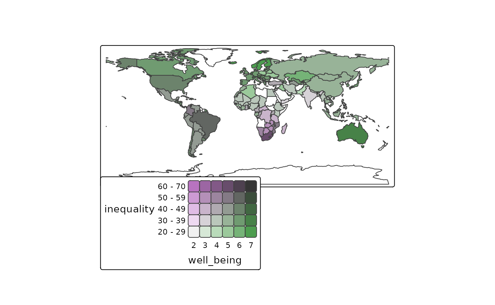
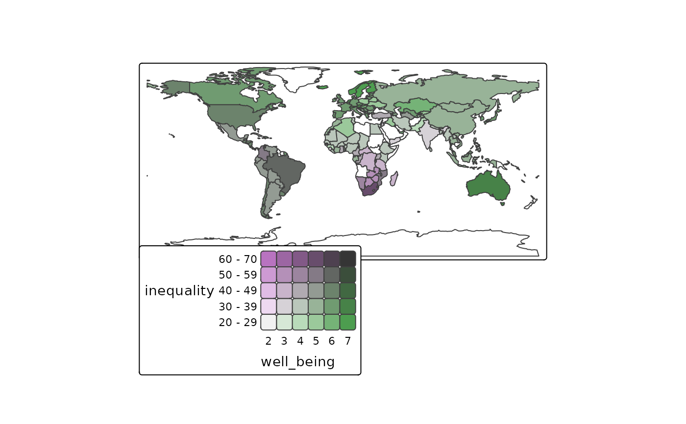

Map layer that draws polygons. Supported visual variables are: fill (the fill color),
col (the border color), lwd (line width), lty (line type),
fill_alpha (fill color alpha transparency) and col_alpha (border color alpha transparency).
Usage
tm_polygons(
fill = tm_const(),
fill.scale = tm_scale(),
fill.legend = tm_legend(),
fill.chart = tm_chart_none(),
fill.free = NA,
col = tm_const(),
col.scale = tm_scale(),
col.legend = tm_legend(),
col.chart = tm_chart_none(),
col.free = NA,
lwd = tm_const(),
lwd.scale = tm_scale(),
lwd.legend = tm_legend(),
lwd.chart = tm_chart_none(),
lwd.free = NA,
lty = tm_const(),
lty.scale = tm_scale(),
lty.legend = tm_legend(),
lty.chart = tm_chart_none(),
lty.free = NA,
fill_alpha = tm_const(),
fill_alpha.scale = tm_scale(),
fill_alpha.legend = tm_legend(),
fill_alpha.chart = tm_chart_none(),
fill_alpha.free = NA,
col_alpha = tm_const(),
col_alpha.scale = tm_scale(),
col_alpha.legend = tm_legend(),
col_alpha.chart = tm_chart_none(),
col_alpha.free = NA,
linejoin = "round",
lineend = "round",
plot.order = tm_plot_order("AREA", reverse = FALSE, na.order = "bottom"),
zindex = NA,
group = NA,
group.control = "check",
popup.vars = NA,
popup.format = list(),
hover = "",
id = "",
polygons.only = "ifany",
...
)
tm_fill(...)
tm_borders(col = tm_const(), ...)Arguments
- fill, fill.scale, fill.legend, fill.chart, fill.free
Visual variable that determines the fill color. See details.
- col, col.scale, col.legend, col.chart, col.free
Visual variable that determines the border color. See details.
- lwd, lwd.scale, lwd.legend, lwd.chart, lwd.free
Visual variable that determines the line width. See details.
- lty, lty.scale, lty.legend, lty.chart, lty.free
Visual variable that determines the line type. See details.
- fill_alpha, fill_alpha.scale, fill_alpha.chart, fill_alpha.legend, fill_alpha.free
Visual variable that determines the fill color alpha transparency See details.
- col_alpha, col_alpha.scale, col_alpha.legend, col_alpha.chart, col_alpha.free
Visual variable that determines the border color alpha transparency. See details.
- linejoin, lineend
Line join and line end. See gpar() for details.
- plot.order
Specification in which order the spatial features are drawn. See
tm_plot_order()for details.- zindex
Map layers are drawn on top of each other. The
zindexnumbers (one for each map layer) determines the stacking order. By default the map layers are drawn in the order they are called.- group
Name of the group to which this layer belongs. This is only relevant in view mode, where layer groups can be switched (see
group.control)- group.control
In view mode, the group control determines how layer groups can be switched on and off. Options:
"radio"for radio buttons (meaning only one group can be shown),"check"for check boxes (so multiple groups can be shown), and"none"for no control (the group cannot be (de)selected).- popup.vars
names of data variables that are shown in the popups in
"view"mode. Set popup.vars toTRUEto show all variables in the shape object. Set popup.vars toFALSEto disable popups. Setpopup.varsto a character vector of variable names to those those variables in the popups. The default (NA) depends on whether visual variables (e.g.fill) are used. If so, only those are shown. If not all variables in the shape object are shown.- popup.format
list of formatting options for the popup values. See the argument
legend.formatfor options. Only applicable for numeric data variables. If one list of formatting options is provided, it is applied to all numeric variables ofpopup.vars. Also, a (named) list of lists can be provided. In that case, each list of formatting options is applied to the named variable.- hover
name of the data variable that specifies the hover labels
- id
name of the data variable that specifies the indices of the spatial features. Only used for
"view"mode.- polygons.only
should only polygon geometries of the shape object (defined in
tm_shape()) be plotted? By default"ifany", which meansTRUEin case a geometry collection is specified.- ...
to catch deprecated arguments from version < 4.0
Details
The visual variable arguments (e.g. col) can be specified with either a data
variable name (e.g., a spatial vector attribute or a raster layer of the object
specified in tm_shape()), or with a visual value (for col, a color is expected).
Multiple values can be specified: in that case facets are created.
These facets can be combined with other faceting data variables, specified with tm_facets().
The
*.scalearguments determine the used scale to map the data values to visual variable values. These can be specified with one of the availabletm_scale_*()functions. The default is specified by the tmap option (tm_options())scales.var.The
*.legendarguments determine the used legend, specified withtm_legend(). The default legend and its settings are determined by the tmap options (tm_options())legend..The
*.chartarguments specify additional charts, specified withtm_chart_, e.g.tm_chart_histogram()The
*.freearguments determine whether scales are applied freely across facets, or shared. A logical value is required. They can also be specified with a vector of three logical values; these determine whether scales are applied freely per facet dimension. This is only useful when facets are applied (seetm_facets()). There are maximally three facet dimensions: rows, columns, and pages. This only applies for a facet grid (tm_facets_grid()). For instance,col.free = c(TRUE, FALSE, FALSE)means that for the visual variablecol, each row of facets will have its own scale, and therefore its own legend. For facet wraps and stacks (tm_facets_wrap()andtm_facets_stack()) there is only one facet dimension, so the*.freeargument requires only one logical value.
Examples
# load Africa country data
data(World)
Africa = World[World$continent == "Africa", ]
Africa_border = sf::st_make_valid(sf::st_union(sf::st_buffer(Africa, 0.001))) # slow and ugly
# without specifications
tm_shape(Africa_border) + tm_polygons()
 tm_shape(Africa_border) + tm_fill()
tm_shape(Africa_border) + tm_fill()
 tm_shape(Africa_border) + tm_borders()
tm_shape(Africa_border) + tm_borders()
 # specification with visual variable values
tm_shape(Africa) +
tm_polygons(fill = "limegreen", col = "purple", lwd = 3, lty = "solid", col_alpha = 0.3) +
tm_shape(Africa_border) +
tm_borders("darkred", lwd = 4)
# specification with visual variable values
tm_shape(Africa) +
tm_polygons(fill = "limegreen", col = "purple", lwd = 3, lty = "solid", col_alpha = 0.3) +
tm_shape(Africa_border) +
tm_borders("darkred", lwd = 4)
 # specification with a data variable
tm_shape(Africa) +
tm_polygons(fill = "income_grp", fill.scale = tm_scale_categorical(values = "tol.muted"))
# specification with a data variable
tm_shape(Africa) +
tm_polygons(fill = "income_grp", fill.scale = tm_scale_categorical(values = "tol.muted"))
 # continuous color scale with landscape legend
tm_shape(Africa) +
tm_polygons(fill = "inequality",
fill.scale = tm_scale_continuous(values = "kovesi.rainbow_bu_pk"),
fill.legend = tm_legend(
title = "", orientation = "landscape",
position = tm_pos_out("center", "bottom"), frame = FALSE
)) +
tm_title("Inequality index", position = tm_pos_in("right", "TOP"), frame = FALSE) +
tm_layout(frame = FALSE)
# continuous color scale with landscape legend
tm_shape(Africa) +
tm_polygons(fill = "inequality",
fill.scale = tm_scale_continuous(values = "kovesi.rainbow_bu_pk"),
fill.legend = tm_legend(
title = "", orientation = "landscape",
position = tm_pos_out("center", "bottom"), frame = FALSE
)) +
tm_title("Inequality index", position = tm_pos_in("right", "TOP"), frame = FALSE) +
tm_layout(frame = FALSE)
 tm_shape(World) +
tm_polygons(tm_mv("inequality", "well_being"))
#> Labels abbreviated by the first letters, e.g.: "2 to 3" => "2"

####################################
########## v3 ######################
####################################
tmap_style("v3")
#> tmap style set to "v3"
#> other available styles are: "white", "gray", "natural", "cobalt", "albatross", "classic", "gray_v3", "grey_v3", "natural_v3", "cobalt_v3", "albatross_v3", "classic_v3"
data(World)
# Constant fill
tm_shape(World) + tm_fill("darkolivegreen3") + tm_format("World", title="A green World")
#> Warning: The 'title' argument of 'tm_format()' is deprecated as of tmap 4.0. Please use 'tm_title()' instead.
tm_shape(World) +
tm_polygons(tm_mv("inequality", "well_being"))
#> Labels abbreviated by the first letters, e.g.: "2 to 3" => "2"

####################################
########## v3 ######################
####################################
tmap_style("v3")
#> tmap style set to "v3"
#> other available styles are: "white", "gray", "natural", "cobalt", "albatross", "classic", "gray_v3", "grey_v3", "natural_v3", "cobalt_v3", "albatross_v3", "classic_v3"
data(World)
# Constant fill
tm_shape(World) + tm_fill("darkolivegreen3") + tm_format("World", title="A green World")
#> Warning: The 'title' argument of 'tm_format()' is deprecated as of tmap 4.0. Please use 'tm_title()' instead.
 # Borders only
tm_shape(World) + tm_borders()
# Borders only
tm_shape(World) + tm_borders()
 # Data variable containing color values
World$isNLD = ifelse(World$name=="Netherlands", "darkorange", "darkolivegreen3")
tm_shape(World) +
tm_fill("isNLD") +
tm_layout("Find the Netherlands!")
#> Error in tmapScaleAsIs(x1 = c("darkolivegreen3", "darkolivegreen3", "darkolivegreen3", "darkolivegreen3", "darkolivegreen3", "darkolivegreen3", "darkolivegreen3", "darkolivegreen3", "darkolivegreen3", "darkolivegreen3", "darkolivegreen3", "darkolivegreen3", "darkolivegreen3", "darkolivegreen3", "darkolivegreen3", "darkolivegreen3", "darkolivegreen3", "darkolivegreen3", "darkolivegreen3", "darkolivegreen3", "darkolivegreen3", "darkolivegreen3", "darkolivegreen3", "darkolivegreen3", "darkolivegreen3", "darkolivegreen3", "darkolivegreen3", "darkolivegreen3", "darkolivegreen3", "darkolivegreen3", "darkolivegreen3", "darkolivegreen3", "darkolivegreen3", "darkolivegreen3", "darkolivegreen3", "darkolivegreen3", "darkolivegreen3", "darkolivegreen3", "darkolivegreen3", "darkolivegreen3", "darkolivegreen3", "darkolivegreen3", "darkolivegreen3", "darkolivegreen3", "darkolivegreen3", "darkolivegreen3", "darkolivegreen3", "darkolivegreen3", "darkolivegreen3", "darkolivegreen3", "darkolivegreen3", "darkolivegreen3", "darkolivegreen3", "darkolivegreen3", "darkolivegreen3", "darkolivegreen3", "darkolivegreen3", "darkolivegreen3", "darkolivegreen3", "darkolivegreen3", "darkolivegreen3", "darkolivegreen3", "darkolivegreen3", "darkolivegreen3", "darkolivegreen3", "darkolivegreen3", "darkolivegreen3", "darkolivegreen3", "darkolivegreen3", "darkolivegreen3", "darkolivegreen3", "darkolivegreen3", "darkolivegreen3", "darkolivegreen3", "darkolivegreen3", "darkolivegreen3", "darkolivegreen3", "darkolivegreen3", "darkolivegreen3", "darkolivegreen3", "darkolivegreen3", "darkolivegreen3", "darkolivegreen3", "darkolivegreen3", "darkolivegreen3", "darkolivegreen3", "darkolivegreen3", "darkolivegreen3", "darkolivegreen3", "darkolivegreen3", "darkolivegreen3", "darkolivegreen3", "darkolivegreen3", "darkolivegreen3", "darkolivegreen3", "darkolivegreen3", "darkolivegreen3", "darkolivegreen3", "darkolivegreen3", "darkolivegreen3", "darkolivegreen3", "darkolivegreen3", "darkolivegreen3", "darkolivegreen3", "darkolivegreen3", "darkolivegreen3", "darkolivegreen3", "darkolivegreen3", "darkolivegreen3", "darkolivegreen3", "darkolivegreen3", "darkolivegreen3", "darkolivegreen3", "darkolivegreen3", "darkolivegreen3", "darkolivegreen3", "darkolivegreen3", "darkorange", "darkolivegreen3", "darkolivegreen3", "darkolivegreen3", "darkolivegreen3", "darkolivegreen3", "darkolivegreen3", "darkolivegreen3", "darkolivegreen3", "darkolivegreen3", "darkolivegreen3", "darkolivegreen3", "darkolivegreen3", "darkolivegreen3", "darkolivegreen3", "darkolivegreen3", "darkolivegreen3", "darkolivegreen3", "darkolivegreen3", "darkolivegreen3", "darkolivegreen3", "darkolivegreen3", "darkolivegreen3", "darkolivegreen3", "darkolivegreen3", "darkolivegreen3", "darkolivegreen3", "darkolivegreen3", "darkolivegreen3", "darkolivegreen3", "darkolivegreen3", "darkolivegreen3", "darkolivegreen3", "darkolivegreen3", "darkolivegreen3", "darkolivegreen3", "darkolivegreen3", "darkolivegreen3", "darkolivegreen3", "darkolivegreen3", "darkolivegreen3", "darkolivegreen3", "darkolivegreen3", "darkolivegreen3", "darkolivegreen3", "darkolivegreen3", "darkolivegreen3", "darkolivegreen3", "darkolivegreen3", "darkolivegreen3", "darkolivegreen3", "darkolivegreen3", "darkolivegreen3", "darkolivegreen3", "darkolivegreen3", "darkolivegreen3", "darkolivegreen3", "darkolivegreen3", "darkolivegreen3", "darkolivegreen3"), scale = structure(list( values.scale = NA, value.neutral = NA), class = c("tm_scale_asis", "tm_scale", "list")), legend = structure(list(show = TRUE, design = "standard", orientation = "portrait", position = structure(list(cell.h = "right", cell.v = "bottom", pos.h = "left", pos.v = "top", align.h = "left", align.v = "top", just.h = "left", just.v = "bottom", type = "autoin"), class = "tm_pos"), width = NA, height = NA, stack = c(all = "vertical", per_row = "horizontal", per_col = "horizontal", all_row = "vertical", all_col = "horizontal", manual = "vertical" ), group.frame = TRUE, resize.as.group = 0, reverse = FALSE, na.show = NA, title.color = "#000000", title.size = 0.9, title.fontface = "plain", title.fontfamily = "", xlab.color = NULL, xlab.size = 0.9, xlab.fontface = "plain", xlab.fontfamily = "", ylab.color = NULL, ylab.size = 0.9, ylab.fontface = "plain", ylab.fontfamily = "", text.color = "#000000", text.size = 0.7, text.fontface = "plain", text.fontfamily = "", frame = NA, frame.lwd = 1, frame.r = 0, bg.color = NA, bg.alpha = 1, only = FALSE, hist.bg.color = NA, hist.bg.alpha = 1, hist.size = 0.7, hist.height = 0.3, hist.width = 0.4, inside.box = FALSE, item.height = c(rect = 1, symbols = 1, gradient = 1, lines = 1.2, text = 1.2, bivariate = 1), item.width = c(rect = 1, symbols = 1, gradient = 1.2, lines = 1.2, text = 3, bivariate = 1), item.r = 0, item.space = c(rect = 0, symbols = 0, gradient = 0, lines = 0.2, text = 0.2, bivariate = 0), item.na.height = c(rect = NA, symbols = NA, gradient = 1.2, lines = NA, text = NA, bivariate = 1 ), item.na.width = c(rect = NA, symbols = NA, gradient = 1.2, lines = NA, text = NA, bivariate = 1), item.na.space = c(rect = 0, symbols = 0, gradient = 0, lines = 0.2, text = 0.2, bivariate = 0 ), item.shape = 107, title.padding = c(0, 0, 0.25, 0), xlab.padding = c(0, 0, 0.25, 0), ylab.padding = c(0, 0, 0.25, 0), title.align = c(bivariate = "right", "left"), xlab.align = "left", ylab.align = "center", ticks = list( rect = list(), symbols = list(), gradient = list(c(1, 1.5)), lines = list(), text = list(), bivariate = list()), ticks.disable.na = c(rect = FALSE, symbols = FALSE, gradient = TRUE, lines = FALSE, text = FALSE, bivariate = TRUE), ticks.col = NA, ticks.lwd = 1.5, margins = c(0.4, 0.4, 0.4, 0.4), margin.item.text = 0.25, title = "isNLD", xlab = NA, ylab = NA, z = NA_integer_, call = c("title", "xlab", "ylab", "z"), mfun = "Polygons"), class = c("tm_legend_standard_portrait", "list")), chart = structure(list(show = FALSE, plot.axis.x = FALSE, plot.axis.y = TRUE, position = structure(list(cell.h = "right", cell.v = "bottom", pos.h = "left", pos.v = "top", align.h = "left", align.v = "bottom", just.h = "left", just.v = "top", type = "autoout"), class = "tm_pos"), width = c(histogram.min = 10, histogram.max = 20, bar.min = 10, bar.max = 20, donut.min = 10, donut.max = 10, heatmap.min = 10, heatmap.max = 15), height = c(histogram.min = 10, histogram.max = 10, bar.min = 10, bar.max = 10, donut.min = 10, donut.max = 10, heatmap.min = 10, heatmap.max = 10), stack = c(all = "vertical", per_row = "horizontal", per_col = "horizontal", all_row = "vertical", all_col = "horizontal", manual = "vertical"), group.frame = TRUE, resize.as.group = 0, reverse = FALSE, na.show = NA, title.color = NULL, title.size = 0.9, title.fontface = "plain", title.fontfamily = "", xlab.color = NULL, xlab.size = 0.9, xlab.fontface = "plain", xlab.fontfamily = "", ylab.color = NULL, ylab.size = 0.9, ylab.fontface = "plain", ylab.fontfamily = "", text.color = NULL, text.size = 0.7, text.fontface = "plain", text.fontfamily = "", frame = TRUE, frame.lwd = 1, frame.r = 2, bg.color = NA, bg.alpha = 1, object.color = "#DDDDDD", summary = "none", call = c("show", "summary"), mfun = "Polygons"), class = c("tm_chart_none", "tm_chart", "tm_component", "list")), o = list(modes = "Find the Netherlands!", crs = structure(list(input = "EPSG:4326", wkt = "GEOGCRS[\"WGS 84\",\n DATUM[\"World Geodetic System 1984\",\n ELLIPSOID[\"WGS 84\",6378137,298.257223563,\n LENGTHUNIT[\"metre\",1]]],\n PRIMEM[\"Greenwich\",0,\n ANGLEUNIT[\"degree\",0.0174532925199433]],\n CS[ellipsoidal,2],\n AXIS[\"geodetic latitude (Lat)\",north,\n ORDER[1],\n ANGLEUNIT[\"degree\",0.0174532925199433]],\n AXIS[\"geodetic longitude (Lon)\",east,\n ORDER[2],\n ANGLEUNIT[\"degree\",0.0174532925199433]],\n USAGE[\n SCOPE[\"unknown\"],\n AREA[\"World\"],\n BBOX[-90,-180,90,180]],\n ID[\"EPSG\",4326]]"), class = "crs"), facet.max = 64, facet.flip = FALSE, free.scales = NULL, raster.max.cells = 1e+06, show.messages = TRUE, show.warnings = TRUE, output.format = "png", output.size = 49, output.dpi = 300, output.dpi.animation = 100, value.const = list(fill.polygons = "grey85", fill.symbols = "grey60", fill.dots = "black", col.polygons = "grey40", col.symbols = "grey40", col.raster = "grey40", col = "black", bgcol = "#00000000", lwd = 1, lty = "solid", text = "Abc", fontface = "plain", shape.symbols = 21, shape.bubbles = 21, shape.squares = 22, shape.dots = 19, size.symbols = 1, size.bubbles = 1.3333, size.squares = 1.3333, size.dots = 0.15, size.text = 1, fill_alpha = 1, col_alpha = 1, bgcol_alpha = 1, angle = 0), value.na = list(fill = "grey75", col = "grey75", col.raster = "#00000000", bgcol = "grey75", lty = "solid", lwd = NA, text = "Unknown", fontface = "plain", fill_alpha = 1, col_alpha = 1, bgcol_alpha = 1, col_alpha.raster = 0, angle = 0), value.null = list(fill = "grey95", col = "grey95", col.polygons = "grey40", bgcol = "grey95", lty = "solid", lwd = 0.2, text = "", fontface = "plain", fill_alpha = 1, col_alpha = 1, bgcol_alpha = 1, size = 0.2, angle = 0), value.blank = list(fill = "#00000000", col = "#00000000", bgcol = "#00000000", lty = "blank", lwd = 0, text = "", fontface = "plain", fill_alpha = 0, col_alpha = 0, bgcol_alpha = 0, angle = 0), values.var = list(fill = list(seq = "brewer.yl_or_br", div = "brewer.rd_yl_gn", unord = "brewer.set3", ord = "brewer.yl_or_br", cyc = "tol.rainbow_pu_rd", biv = "pu_gn_bivs"), col = list( seq = "brewer.yl_or_br", div = "brewer.rd_yl_gn", unord = "brewer.set3", ord = "brewer.yl_or_br", cyc = "tol.rainbow_pu_rd", biv = "pu_gn_bivs"), bgcol = list(seq = "hcl.blues3", div = "pu_gn_div", unord = "tol.muted", ord = "hcl.blues3", cyc = "tol.rainbow_pu_rd", biv = "pu_gn_bivs"), size = structure(list(from = 0, to = 1, power = "sqrt"), class = "tmapSeq"), size.bubbles = structure(list(from = 0, to = 1, power = "sqrt"), class = "tmapSeq"), lwd = c(0, 3), lty = c("dashed", "dotted", "dotdash", "longdash", "twodash"), text = c("A", "B", "C", "D", "E", "F", "G", "H", "I", "J", "K", "L", "M", "N", "O", "P", "Q", "R", "S", "T", "U", "V", "W", "X", "Y", "Z" ), fontface = c("plain", "italic", "bold"), fill_alpha = c(0.25, 1), col_alpha = c(0.25, 1), bgcol_alpha = c(0.25, 1), shape = 21:25, area = c(0, 1), xmod = c(0, 1), ymod = c(0, 1), angle = c(0, 360)), values.range = list(fill = NA, col = NA, size = c(0, 1), lwd = c(0.1, 1), lty = NA, text = NA, fontface = NA, fill_alpha = NA, col_alpha = NA, shape = NA, angle = NA), value.neutral = list(size = 0.75, lwd = 2, lty = "solid", fill_alpha = 1, col_alpha = 1, bgcol_alpha = 1, text = "Abc", fontface = "plain", angle = 0), values.scale = list(1, lwd.lines = 1, size.symbols = 1, size.bubbles = 1.3333, size.squares = 1.3333), scales.var = list(fill = list( fact = "categorical", num = "intervals", int = "discrete"), col = list(fact = "categorical", num = "intervals", int = "discrete"), bgcol = list(fact = "categorical", num = "intervals", int = "discrete"), lwd = list(fact = "categorical", num = "continuous", int = "discrete"), lty = list( fact = "categorical", num = "intervals"), shape = list( fact = "categorical", num = "intervals"), size = list( fact = "categorical", num = "continuous"), fill_alpha = list( fact = "categorical", num = "intervals"), col_alpha = list( fact = "categorical", num = "intervals"), bgcol_alpha = list( fact = "categorical", num = "intervals"), area = list( fact = "categorical", num = "continuous"), xmod = list( fact = "asis", num = "asis"), ymod = list(fact = "asis", num = "asis"), angle = list(fact = "asis", num = "asis"), text = list(fact = "asis", num = "asis"), fontface = list( fact = "categorical", num = "categorical")), scale.misc.args = list( continuous = list(n = c(fill = 5, col = 5, 5), outliers.trunc = c(FALSE, FALSE), trans = "identity", limits = list(fill = NA, col = NA, 0)), rank = list(n = 5, unit = "rank")), label.format = list(fun = NULL, scientific = FALSE, digits = NA, big.num.abbr = c(mln = 6, bln = 9), prefix = "", suffix = "", text.separator = "to", text.less.than = c("Less", "than" ), text.or.more = c("or", "more"), text.align = NA, text.to.columns = FALSE, html.escape = TRUE), label.na = "Missing", scale = 1, asp = NA, bg.color = "#FFFFFF00", outer.bg.color = "#FFFFFF00", frame = "#000000", frame.lwd = 1, frame.r = 0, frame.double.line = FALSE, outer.margins = c(0.02, 0.02, 0.02, 0.02), inner.margins = list( stars = c(0, 0, 0, 0), SpatRaster = c(0, 0, 0, 0), c(0.02, 0.02, 0.02, 0.02)), inner.margins.extra = NULL, meta.margins = NA, meta.auto.margins = c(0.4, 0.4, 0.4, 0.4), between.margin = 0.5, component.offset = c(inside = 0.75, INSIDE = 0, outside = 0, OUTSIDE = 0), component.stack.margin = 0, grid.mark.height = 2, xylab.height = 1.25, coords.height = 1.25, xlab.show = FALSE, xlab.text = "", xlab.size = 1, xlab.color = "black", xlab.rotation = 0, xlab.space = 0, xlab.fontface = "plain", xlab.fontfamily = "", xlab.side = "bottom", ylab.show = FALSE, ylab.text = "", ylab.size = 1, ylab.color = "black", ylab.rotation = 0, ylab.space = 0, ylab.fontface = "plain", ylab.fontfamily = "", ylab.side = "left", panel.type = NA, panel.wrap.pos = "top", panel.xtab.pos = c("left", "top"), unit = "metric", color.sepia.intensity = NULL, color.saturation = NULL, color.vision.deficiency.sim = NULL, text.fontface = "plain", text.fontfamily = "", component.position = list(`in` = list( pos.h = "left", pos.v = "top", align.h = "left", align.v = "top", just.h = "left", just.v = "top"), out = list(cell.h = "right", cell.v = "center", pos.h = "left", pos.v = "top", align.h = "left", align.v = "top", just.h = "left", just.v = "top")), legend.show = TRUE, legend.design = "standard", legend.orientation = "portrait", legend.position = structure(list(cell.h = "right", cell.v = "bottom", pos.h = "left", pos.v = "top", align.h = "left", align.v = "top", just.h = "left", just.v = "bottom", type = "autoin"), class = "tm_pos"), legend.width = NA, legend.height = NA, legend.stack = c(all = "vertical", per_row = "horizontal", per_col = "horizontal", all_row = "vertical", all_col = "horizontal", manual = "vertical"), legend.group.frame = TRUE, legend.resize.as.group = 0, legend.reverse = FALSE, legend.na.show = NA, legend.title.color = "#000000", legend.title.size = 0.9, legend.title.fontface = "plain", legend.title.fontfamily = "", legend.xlab.color = NULL, legend.xlab.size = 0.9, legend.xlab.fontface = "plain", legend.xlab.fontfamily = "", legend.ylab.color = NULL, legend.ylab.size = 0.9, legend.ylab.fontface = "plain", legend.ylab.fontfamily = "", legend.text.color = "#000000", legend.text.size = 0.7, legend.text.fontface = "plain", legend.text.fontfamily = "", legend.frame = NA, legend.frame.lwd = 1, legend.frame.r = 0, legend.bg.color = NA, legend.bg.alpha = 1, legend.only = FALSE, legend.settings.standard.portrait = list( item.height = c(rect = 1, symbols = 1, gradient = 1, lines = 1.2, text = 1.2, bivariate = 1), item.width = c(rect = 1, symbols = 1, gradient = 1.2, lines = 1.2, text = 3, bivariate = 1 ), item.r = 0, item.space = c(rect = 0, symbols = 0, gradient = 0, lines = 0.2, text = 0.2, bivariate = 0), item.na.height = c(rect = NA, symbols = NA, gradient = 1.2, lines = NA, text = NA, bivariate = 1), item.na.width = c(rect = NA, symbols = NA, gradient = 1.2, lines = NA, text = NA, bivariate = 1), item.na.space = c(rect = 0, symbols = 0, gradient = 0, lines = 0.2, text = 0.2, bivariate = 0), item.shape = 107, title.padding = c(0, 0, 0.25, 0), xlab.padding = c(0, 0, 0.25, 0), ylab.padding = c(0, 0, 0.25, 0), title.align = c(bivariate = "right", "left"), xlab.align = "left", ylab.align = "center", ticks = list(rect = list(), symbols = list(), gradient = list( c(1, 1.5)), lines = list(), text = list(), bivariate = list()), ticks.disable.na = c(rect = FALSE, symbols = FALSE, gradient = TRUE, lines = FALSE, text = FALSE, bivariate = TRUE), ticks.col = NA, ticks.lwd = 1.5, margins = c(0.4, 0.4, 0.4, 0.4), margin.item.text = 0.25), legend.settings.standard.landscape = list(item.height = c(rect = 1, symbols = 1, gradient = 1.2, lines = 1, text = 1), item.width = c(rect = 6, symbols = 3, gradient = 6, lines = 6, text = 6), item.r = 0, item.space = c(rect = 0.2, symbols = 0.3, gradient = 0, lines = 0.2, text = 0.2), item.na.height = c(rect = NA, symbols = NA, gradient = 2, lines = NA, text = NA), item.na.width = c(rect = NA, symbols = NA, gradient = 6, lines = NA, text = NA), item.na.space = c(rect = 0.2, symbols = 0.3, gradient = 0.3, lines = 0.2, text = 0.2 ), item.shape = 107, title.padding = c(0, 0, 0.25, 0), xlab.padding = c(0, 0, 0.25, 0), ylab.padding = c(0, 0, 0.25, 0), title.align = c(bivariate = "right", "left" ), xlab.align = "left", ylab.align = "center", ticks = list( rect = list(), symbols = list(), gradient = list( c(0.8, 1)), lines = list(), text = list()), ticks.disable.na = c(rect = FALSE, symbols = FALSE, gradient = TRUE, lines = FALSE, text = FALSE ), ticks.col = NA, ticks.lwd = 1.5, margins = c(0.4, 0.4, 0.4, 0.4), margin.item.text = 0.25), chart.show = TRUE, chart.plot.axis.x = FALSE, chart.plot.axis.y = TRUE, chart.position = structure(list( cell.h = "right", cell.v = "bottom", pos.h = "left", pos.v = "top", align.h = "left", align.v = "bottom", just.h = "left", just.v = "top", type = "autoout"), class = "tm_pos"), chart.width = c(histogram.min = 10, histogram.max = 20, bar.min = 10, bar.max = 20, donut.min = 10, donut.max = 10, heatmap.min = 10, heatmap.max = 15), chart.height = c(histogram.min = 10, histogram.max = 10, bar.min = 10, bar.max = 10, donut.min = 10, donut.max = 10, heatmap.min = 10, heatmap.max = 10), chart.stack = c(all = "vertical", per_row = "horizontal", per_col = "horizontal", all_row = "vertical", all_col = "horizontal", manual = "vertical"), chart.group.frame = TRUE, chart.resize.as.group = 0, chart.reverse = FALSE, chart.na.show = NA, chart.title.color = NULL, chart.title.size = 0.9, chart.title.fontface = "plain", chart.title.fontfamily = "", chart.xlab.color = NULL, chart.xlab.size = 0.9, chart.xlab.fontface = "plain", chart.xlab.fontfamily = "", chart.ylab.color = NULL, chart.ylab.size = 0.9, chart.ylab.fontface = "plain", chart.ylab.fontfamily = "", chart.text.color = NULL, chart.text.size = 0.7, chart.text.fontface = "plain", chart.text.fontfamily = "", chart.frame = TRUE, chart.frame.lwd = 1, chart.frame.r = 2, chart.bg.color = NA, chart.bg.alpha = 1, chart.object.color = "#DDDDDD", title.show = FALSE, title.size = 1.3, title.color = "#000000", title.fontface = "plain", title.fontfamily = "", title.bg.color = NA, title.bg.alpha = 1, title.padding = c(0.25, 0.25, 0.25, 0.25 ), title.frame = FALSE, title.frame.lwd = 1, title.frame.r = 2, title.stack = "vertical", title.position = structure(list( cell.h = "center", cell.v = "top", pos.h = "left", pos.v = "top", align.h = "left", align.v = "top", just.h = "left", just.v = "bottom", type = "in"), class = "tm_pos"), title.width = NA, title.group.frame = TRUE, title.resize.as.group = 0, credits.show = FALSE, credits.size = 0.7, credits.color = NA, credits.fontface = NA, credits.fontfamily = NA, credits.bg.color = NA, credits.bg.alpha = 1, credits.padding = c(0.25, 0.25, 0.25, 0.25), credits.frame = FALSE, credits.frame.lwd = 1, credits.frame.r = 2, credits.stack = "vertical", credits.position = structure(list( pos.h = "right", pos.v = "bottom", align.h = "left", align.v = "top", just.h = "left", just.v = "bottom", type = "in"), class = "tm_pos"), credits.width = NA, credits.heigth = NA, credits.group.frame = TRUE, credits.resize.as.group = 0, compass.north = 0, compass.type = "arrow", compass.text.size = 0.8, compass.size = NA_real_, compass.show.labels = 1, compass.cardinal.directions = c("N", "E", "S", "W"), compass.text.color = NA, compass.color.dark = NA, compass.color.light = NA, compass.lwd = 1, compass.bg.color = NA, compass.bg.alpha = NA, compass.margins = c(0.4, 0.4, 0.4, 0.4), compass.show = FALSE, compass.stack = "vertical", compass.position = structure(list( pos.h = "right", pos.v = "bottom", align.h = "left", align.v = "top", just.h = "left", just.v = "bottom", type = "in"), class = "tm_pos"), compass.frame = FALSE, compass.frame.lwd = 1, compass.frame.r = 2, compass.group.frame = TRUE, compass.resize.as.group = 0, scalebar.show = FALSE, scalebar.breaks = NULL, scalebar.width = 20, scalebar.text.size = 0.5, scalebar.text.color = NA, scalebar.color.dark = "black", scalebar.color.light = "white", scalebar.lwd = 1, scalebar.bg.color = NA, scalebar.bg.alpha = NA, scalebar.size = numeric(0), scalebar.margins = c(0.01, 0.01, 0.01, 0.01), scalebar.stack = "vertical", scalebar.position = structure(list( pos.h = "right", pos.v = "bottom", align.h = "left", align.v = "top", just.h = "left", just.v = "bottom", type = "in"), class = "tm_pos"), scalebar.frame = FALSE, scalebar.frame.lwd = 1, scalebar.frame.r = 2, scalebar.group.frame = TRUE, scalebar.resize.as.group = 0, grid.show = FALSE, grid.labels.pos = c("left", "bottom"), grid.x = NA, grid.y = NA, grid.n.x = NA, grid.n.y = NA, grid.crs = NA, grid.col = NA, grid.lwd = 1, grid.alpha = NA, grid.labels.show = TRUE, grid.labels.size = 0.6, grid.labels.col = NA, grid.labels.rot = c(0, 0), grid.labels.format = list(big.mark = ","), grid.labels.cardinal = FALSE, grid.labels.margin.x = 0, grid.labels.margin.y = 0, grid.labels.space.x = NA, grid.labels.space.y = NA, grid.labels.inside.frame = FALSE, grid.ticks = TRUE, grid.lines = TRUE, grid.ndiscr = 100, mouse_coordinates.stack = "vertical", mouse_coordinates.position = structure(list( pos.h = "right", pos.v = "bottom", align.h = "left", align.v = "top", just.h = "left", just.v = "bottom", type = "in"), class = "tm_pos"), mouse_coordinates.show = FALSE, panel.show = NA, panel.labels = NA, panel.label.size = 1, panel.label.color = "#000000", panel.label.fontface = "plain", panel.label.fontfamily = "", panel.label.bg.color = "#CCCCCC", panel.label.height = 1, panel.label.rot = c(90, 0), bbox = NULL, set.bounds = FALSE, set.view = NA, set.zoom.limits = NA, qtm.scalebar = TRUE, qtm.minimap = FALSE, qtm.mouse.coordinates = TRUE, earth.boundary = FALSE, earth.boundary.color = "#000000", earth.boundary.lwd = 1, earth.datum = 4326, space.color = "#FFFFFF00", attr.color = "black", max.categories = 30, legend.hist.bg.color = NA, legend.hist.bg.alpha = 1, legend.hist.size = 0.7, legend.hist.height = 0.3, legend.hist.width = 0.4, attr.outside = FALSE, attr.outside.position = "bottom", attr.outside.size = NA_real_, attr.position = c("right", "bottom"), attr.just = c("left", "bottom"), basemap.server = c("Esri.WorldGrayCanvas", "OpenStreetMap", "Esri.WorldTopoMap"), basemap.alpha = 1, basemap.zoom = NA, tiles.alpha = 1, tiles.zoom = NA, overlays = NULL, overlays.alpha = 1, alpha = NA, colorNA = NA, symbol.size.fixed = 0, dot.size.fixed = 1, text.size.variable = 0, check.and.fix = FALSE, name = "Grid", use.gradient = FALSE, basemap.show = FALSE, calls = "modes", nm = "text.size.variable", earth.bounds = c(-180, -90, 180, 90), attr.color.light = FALSE, legend.inside.box = FALSE, pc = list(sepia.intensity = 0, saturation = 1, color.vision.deficiency.sim = "none"), main = 1L, main_class = c("sf", "data.frame"), crs_leaflet = structure(list( crsClass = "L.CRS.Simple", code = NULL, proj4def = NULL, projectedBounds = NULL, options = structure(list(), names = character(0))), class = "leaflet_crs"), crs_main = structure(list(input = "EPSG:4326", wkt = "GEOGCRS[\"WGS 84\",\n DATUM[\"World Geodetic System 1984\",\n ELLIPSOID[\"WGS 84\",6378137,298.257223563,\n LENGTHUNIT[\"metre\",1]]],\n PRIMEM[\"Greenwich\",0,\n ANGLEUNIT[\"degree\",0.0174532925199433]],\n CS[ellipsoidal,2],\n AXIS[\"geodetic latitude (Lat)\",north,\n ORDER[1],\n ANGLEUNIT[\"degree\",0.0174532925199433]],\n AXIS[\"geodetic longitude (Lon)\",east,\n ORDER[2],\n ANGLEUNIT[\"degree\",0.0174532925199433]],\n USAGE[\n SCOPE[\"unknown\"],\n AREA[\"World\"],\n BBOX[-90,-180,90,180]],\n ID[\"EPSG\",4326]]"), class = "crs"), type = "stack", by = NULL, rows = NULL, columns = NULL, as.layers = FALSE, pages = NULL, nrows = NA, ncols = NA, orientation = NA, free.coords = c(FALSE, FALSE, FALSE), drop.units = TRUE, drop.empty.facets = TRUE, drop.NA.facets = FALSE, sync = TRUE, showNA = NA, textNA = "Mssing", scale.factor = 2, byvars = character(0), bys = "VARS__", limitvars = FALSE, nsbd = 0L, by3 = NULL, by2 = NULL, by1 = "VARS__", by__ = character(0), var__ = "by1__", by123__ = c("by1__", "by2__", "by3__"), by123 = c("by1", "by2", "by3"), b = integer(0), v = 1L, byi = NULL, i = 3L, gn = c(1L, 1L, 1L), gl = list( "isNLD", NULL, NULL), fl = list("isNLD", NULL, NULL), fn = c(1L, 1L, 1L), n = 1), aes = "fill", layer = "polygons", layer_args = list(), NA, FALSE, TRUE): could not find function "tmapScaleAsIs"
tm_shape(World, projection = "+proj=eck4") +
tm_polygons("economy", title="Economy", id="name") +
tm_text("iso_a3", size="AREA", scale=1.5) +
tm_format("World")
#> Warning: The 'projection' argument of 'tm_shape()' is deprecated as of tmap 4.0. Pleaes use 'crs' instead.
#> tm_polygons: Deprecated tmap v3 code detected. Code translated to v4
#> tm_text: Deprecated tmap v3 code detected. Code translated to v4
#> Error in tmapScaleAsIs(structure(c(1L, 2L, 3L, 4L, 5L, 6L, 7L, 8L, 9L, 10L, 11L, 12L, 13L, 14L, 15L, 16L, 17L, 18L, 19L, 20L, 21L, 22L, 23L, 24L, 25L, 26L, 27L, 28L, 29L, 30L, 31L, 32L, 33L, 34L, 35L, 36L, 37L, 38L, 173L, 39L, 40L, 41L, 42L, 43L, 44L, 45L, 46L, 47L, 48L, 50L, 51L, 52L, 53L, 54L, 55L, 56L, 57L, 58L, 59L, 60L, 61L, 62L, 63L, 64L, 65L, 66L, 67L, 68L, 69L, 70L, 71L, 72L, 73L, 74L, 75L, 76L, 77L, 78L, 79L, 80L, 81L, 82L, 83L, 84L, 85L, 86L, 87L, 88L, 166L, 89L, 90L, 91L, 92L, 93L, 94L, 95L, 96L, 97L, 98L, 99L, 100L, 101L, 102L, 103L, 104L, 105L, 106L, 107L, 108L, 109L, 110L, 111L, 112L, 113L, 114L, 115L, 116L, 117L, 118L, 119L, 120L, 121L, 122L, 123L, 124L, 125L, 126L, 127L, 128L, 129L, 130L, 131L, 132L, 133L, 134L, 135L, 136L, 49L, 137L, 138L, 146L, 139L, 140L, 141L, 142L, 143L, 144L, 145L, 147L, 148L, 149L, 150L, 151L, 152L, 153L, 154L, 155L, 156L, 157L, 158L, 159L, 160L, 161L, 162L, 163L, 164L, 165L, 167L, 168L, 169L, 170L, 171L, 172L, 174L, 175L, 176L, 177L), levels = c("AFG", "AGO", "ALB", "ARE", "ARG", "ARM", "ATA", "ATF", "AUS", "AUT", "AZE", "BDI", "BEL", "BEN", "BFA", "BGD", "BGR", "BHS", "BIH", "BLR", "BLZ", "BOL", "BRA", "BRN", "BTN", "BWA", "CAF", "CAN", "CHE", "CHL", "CHN", "CIV", "CMR", "COD", "COG", "COL", "CRI", "CUB", "CYP", "CZE", "DEU", "DJI", "DNK", "DOM", "DZA", "ECU", "EGY", "ERI", "ESH", "ESP", "EST", "ETH", "FIN", "FJI", "FLK", "FRA", "GAB", "GBR", "GEO", "GHA", "GIN", "GMB", "GNB", "GNQ", "GRC", "GRL", "GTM", "GUY", "HND", "HRV", "HTI", "HUN", "IDN", "IND", "IRL", "IRN", "IRQ", "ISL", "ISR", "ITA", "JAM", "JOR", "JPN", "KAZ", "KEN", "KGZ", "KHM", "KOR", "KWT", "LAO", "LBN", "LBR", "LBY", "LKA", "LSO", "LTU", "LUX", "LVA", "MAR", "MDA", "MDG", "MEX", "MKD", "MLI", "MMR", "MNE", "MNG", "MOZ", "MRT", "MWI", "MYS", "NAM", "NCL", "NER", "NGA", "NIC", "NLD", "NOR", "NPL", "NZL", "OMN", "PAK", "PAN", "PER", "PHL", "PNG", "POL", "PRI", "PRK", "PRT", "PRY", "PSE", "QAT", "ROU", "RUS", "RWA", "SAU", "SDN", "SEN", "SLB", "SLE", "SLV", "SOL", "SOM", "SRB", "SSD", "SUR", "SVK", "SVN", "SWE", "SWZ", "SYR", "TCD", "TGO", "THA", "TJK", "TKM", "TLS", "TTO", "TUN", "TUR", "TWN", "TZA", "UGA", "UKR", "UNK", "URY", "USA", "UZB", "VEN", "VNM", "VUT", "XTX", "YEM", "ZAF", "ZMB", "ZWE"), class = "factor"), scale = structure(list(values.scale = NA, value.neutral = NA, label.format = structure(list(fun = NULL, scientific = FALSE, digits = NA, big.num.abbr = c(mln = 6, bln = 9), prefix = "", suffix = "", text.separator = "to", text.less.than = c("Less", "than"), text.or.more = c("or", "more"), text.align = NA, text.to.columns = FALSE, html.escape = TRUE), big.num.abbr.set = FALSE)), class = c("tm_scale_asis", "tm_scale", "list")), legend = structure(list(show = TRUE, design = "standard", orientation = "portrait", position = structure(list(cell.h = "right", cell.v = "bottom", pos.h = "left", pos.v = "bottom", align.h = "left", align.v = "top", just.h = "left", just.v = "bottom", type = "in"), class = "tm_pos"), width = NA, height = NA, stack = c(all = "vertical", per_row = "horizontal", per_col = "horizontal", all_row = "vertical", all_col = "horizontal", manual = "vertical" ), group.frame = TRUE, resize.as.group = 0, reverse = FALSE, na.show = NA, title.color = "#000000", title.size = 0.72, title.fontface = "plain", title.fontfamily = "", xlab.color = NULL, xlab.size = 0.72, xlab.fontface = "plain", xlab.fontfamily = "", ylab.color = NULL, ylab.size = 0.72, ylab.fontface = "plain", ylab.fontfamily = "", text.color = "#000000", text.size = 0.56, text.fontface = "plain", text.fontfamily = "", frame = NA, frame.lwd = 0.8, frame.r = 0, bg.color = NA, bg.alpha = 1, only = FALSE, hist.bg.color = NA, hist.bg.alpha = 1, hist.size = 0.56, hist.height = 0.3, hist.width = 0.4, inside.box = FALSE, item.height = c(rect = 1, symbols = 1, gradient = 1, lines = 1.2, text = 1.2, bivariate = 1), item.width = c(rect = 1, symbols = 1, gradient = 1.2, lines = 1.2, text = 3, bivariate = 1), item.r = 0, item.space = c(rect = 0, symbols = 0, gradient = 0, lines = 0.2, text = 0.2, bivariate = 0), item.na.height = c(rect = NA, symbols = NA, gradient = 1.2, lines = NA, text = NA, bivariate = 1 ), item.na.width = c(rect = NA, symbols = NA, gradient = 1.2, lines = NA, text = NA, bivariate = 1), item.na.space = c(rect = 0, symbols = 0, gradient = 0, lines = 0.2, text = 0.2, bivariate = 0 ), item.shape = 107, title.padding = c(0, 0, 0.25, 0), xlab.padding = c(0, 0, 0.25, 0), ylab.padding = c(0, 0, 0.25, 0), title.align = c(bivariate = "right", "left"), xlab.align = "left", ylab.align = "center", ticks = list( rect = list(), symbols = list(), gradient = list(c(1, 1.5)), lines = list(), text = list(), bivariate = list()), ticks.disable.na = c(rect = FALSE, symbols = FALSE, gradient = TRUE, lines = FALSE, text = FALSE, bivariate = TRUE), ticks.col = NA, ticks.lwd = 1.5, margins = c(0.4, 0.4, 0.4, 0.4), margin.item.text = 0.25, title = "iso_a3", xlab = NA, ylab = NA, z = NA_integer_, call = c("title", "xlab", "ylab", "z"), mfun = "Text"), class = c("tm_legend_standard_portrait", "list")), chart = structure(list(show = FALSE, plot.axis.x = FALSE, plot.axis.y = TRUE, position = structure(list(cell.h = "right", cell.v = "bottom", pos.h = "left", pos.v = "top", align.h = "left", align.v = "bottom", just.h = "left", just.v = "top", type = "autoout"), class = "tm_pos"), width = c(histogram.min = 10, histogram.max = 20, bar.min = 10, bar.max = 20, donut.min = 10, donut.max = 10, heatmap.min = 10, heatmap.max = 15), height = c(histogram.min = 10, histogram.max = 10, bar.min = 10, bar.max = 10, donut.min = 10, donut.max = 10, heatmap.min = 10, heatmap.max = 10), stack = c(all = "vertical", per_row = "horizontal", per_col = "horizontal", all_row = "vertical", all_col = "horizontal", manual = "vertical"), group.frame = TRUE, resize.as.group = 0, reverse = FALSE, na.show = NA, title.color = NULL, title.size = 0.72, title.fontface = "plain", title.fontfamily = "", xlab.color = NULL, xlab.size = 0.72, xlab.fontface = "plain", xlab.fontfamily = "", ylab.color = NULL, ylab.size = 0.72, ylab.fontface = "plain", ylab.fontfamily = "", text.color = NULL, text.size = 0.56, text.fontface = "plain", text.fontfamily = "", frame = TRUE, frame.lwd = 0.8, frame.r = 2, bg.color = NA, bg.alpha = 1, object.color = "#DDDDDD", summary = "none", call = c("show", "summary"), mfun = "Text"), class = c("tm_chart_none", "tm_chart", "tm_component", "list")), o = list(modes = list(plot = list( name = "Grid", use.gradient = FALSE, basemap.show = FALSE), view = list(name = "Leaflet", use.WebGL = FALSE, legend.position = structure(list( pos.h = "right", pos.v = "bottom", align.h = "left", align.v = "top", just.h = "left", just.v = "bottom", type = "in"), class = "tm_pos"), crs = list(dimensions = 3857, 4326), facet.max = 16, control.position = c("left", "top" ), control.collapse = FALSE, panel.show = FALSE, basemap.show = TRUE, set.bounds = FALSE, set.view = NA, set.zoom.limits = NA, leaflet.options = list(), legend.bg.alpha = 0.8)), crs = "+proj=eck4", facet.max = 64, facet.flip = FALSE, free.scales = NULL, raster.max.cells = 1e+06, show.messages = TRUE, show.warnings = TRUE, output.format = "png", output.size = 39.2, output.dpi = 300, output.dpi.animation = 100, value.const = list(fill.polygons = "grey85", fill.symbols = "grey60", fill.dots = "black", col.polygons = "grey40", col.symbols = "grey40", col.raster = "grey40", col = "black", bgcol = "#00000000", lwd = 1, lty = "solid", text = "Abc", fontface = "plain", shape.symbols = 21, shape.bubbles = 21, shape.squares = 22, shape.dots = 19, size.symbols = 1, size.bubbles = 1.3333, size.squares = 1.3333, size.dots = 0.15, size.text = 1, fill_alpha = 1, col_alpha = 1, bgcol_alpha = 1, angle = 0), value.na = list(fill = "grey75", col = "grey75", col.raster = "#00000000", bgcol = "grey75", lty = "solid", lwd = NA, text = "Unknown", fontface = "plain", fill_alpha = 1, col_alpha = 1, bgcol_alpha = 1, col_alpha.raster = 0, angle = 0), value.null = list(fill = "grey95", col = "grey95", col.polygons = "grey40", bgcol = "grey95", lty = "solid", lwd = 0.2, text = "", fontface = "plain", fill_alpha = 1, col_alpha = 1, bgcol_alpha = 1, size = 0.2, angle = 0), value.blank = list(fill = "#00000000", col = "#00000000", bgcol = "#00000000", lty = "blank", lwd = 0, text = "", fontface = "plain", fill_alpha = 0, col_alpha = 0, bgcol_alpha = 0, angle = 0), values.var = list(fill = list(seq = "brewer.yl_or_br", div = "brewer.rd_yl_gn", unord = "brewer.set3", ord = "brewer.yl_or_br", cyc = "tol.rainbow_pu_rd", biv = "pu_gn_bivs"), col = list( seq = "brewer.yl_or_br", div = "brewer.rd_yl_gn", unord = "brewer.set3", ord = "brewer.yl_or_br", cyc = "tol.rainbow_pu_rd", biv = "pu_gn_bivs"), bgcol = list(seq = "hcl.blues3", div = "pu_gn_div", unord = "tol.muted", ord = "hcl.blues3", cyc = "tol.rainbow_pu_rd", biv = "pu_gn_bivs"), size = structure(list(from = 0, to = 1, power = "sqrt"), class = "tmapSeq"), size.bubbles = structure(list(from = 0, to = 1, power = "sqrt"), class = "tmapSeq"), lwd = c(0, 3), lty = c("dashed", "dotted", "dotdash", "longdash", "twodash"), text = c("A", "B", "C", "D", "E", "F", "G", "H", "I", "J", "K", "L", "M", "N", "O", "P", "Q", "R", "S", "T", "U", "V", "W", "X", "Y", "Z" ), fontface = c("plain", "italic", "bold"), fill_alpha = c(0.25, 1), col_alpha = c(0.25, 1), bgcol_alpha = c(0.25, 1), shape = 21:25, area = c(0, 1), xmod = c(0, 1), ymod = c(0, 1), angle = c(0, 360)), values.range = list(fill = NA, col = NA, size = c(0, 1), lwd = c(0.1, 1), lty = NA, text = NA, fontface = NA, fill_alpha = NA, col_alpha = NA, shape = NA, angle = NA), value.neutral = list(size = 0.75, lwd = 2, lty = "solid", fill_alpha = 1, col_alpha = 1, bgcol_alpha = 1, text = "Abc", fontface = "plain", angle = 0), values.scale = list(1, lwd.lines = 1, size.symbols = 1, size.bubbles = 1.3333, size.squares = 1.3333), scales.var = list(fill = list( fact = "categorical", num = "intervals", int = "discrete"), col = list(fact = "categorical", num = "intervals", int = "discrete"), bgcol = list(fact = "categorical", num = "intervals", int = "discrete"), lwd = list(fact = "categorical", num = "continuous", int = "discrete"), lty = list( fact = "categorical", num = "intervals"), shape = list( fact = "categorical", num = "intervals"), size = list( fact = "categorical", num = "continuous"), fill_alpha = list( fact = "categorical", num = "intervals"), col_alpha = list( fact = "categorical", num = "intervals"), bgcol_alpha = list( fact = "categorical", num = "intervals"), area = list( fact = "categorical", num = "continuous"), xmod = list( fact = "asis", num = "asis"), ymod = list(fact = "asis", num = "asis"), angle = list(fact = "asis", num = "asis"), text = list(fact = "asis", num = "asis"), fontface = list( fact = "categorical", num = "categorical")), scale.misc.args = list( continuous = list(n = c(fill = 5, col = 5, 5), outliers.trunc = c(FALSE, FALSE), trans = "identity", limits = list(fill = NA, col = NA, 0)), rank = list(n = 5, unit = "rank")), label.format = list(fun = NULL, scientific = FALSE, digits = NA, big.num.abbr = c(mln = 6, bln = 9), prefix = "", suffix = "", text.separator = "to", text.less.than = c("Less", "than" ), text.or.more = c("or", "more"), text.align = NA, text.to.columns = FALSE, html.escape = TRUE), label.na = "Missing", scale = 0.8, asp = NA, bg.color = "#FFFFFF00", outer.bg.color = "#FFFFFF00", frame = "#000000", frame.lwd = 0.8, frame.r = 0, frame.double.line = FALSE, outer.margins = c(0.02, 0.02, 0.02, 0.02), inner.margins = c(0, 0.05, 0.025, 0.01), inner.margins.extra = NULL, meta.margins = NA, meta.auto.margins = c(0.4, 0.4, 0.4, 0.4), between.margin = 0.5, component.offset = c(inside = 0.75, INSIDE = 0, outside = 0, OUTSIDE = 0), component.stack.margin = 0, grid.mark.height = 2, xylab.height = 1.25, coords.height = 1.25, xlab.show = FALSE, xlab.text = "", xlab.size = 0.8, xlab.color = "black", xlab.rotation = 0, xlab.space = 0, xlab.fontface = "plain", xlab.fontfamily = "", xlab.side = "bottom", ylab.show = FALSE, ylab.text = "", ylab.size = 0.8, ylab.color = "black", ylab.rotation = 0, ylab.space = 0, ylab.fontface = "plain", ylab.fontfamily = "", ylab.side = "left", panel.type = NA, panel.wrap.pos = "top", panel.xtab.pos = c("left", "top"), unit = "metric", color.sepia.intensity = NULL, color.saturation = NULL, color.vision.deficiency.sim = NULL, text.fontface = "plain", text.fontfamily = "", component.position = list( `in` = list(pos.h = "left", pos.v = "top", align.h = "left", align.v = "top", just.h = "left", just.v = "top"), out = list(cell.h = "right", cell.v = "center", pos.h = "left", pos.v = "top", align.h = "left", align.v = "top", just.h = "left", just.v = "top")), legend.show = TRUE, legend.design = "standard", legend.orientation = "portrait", legend.position = structure(list(cell.h = "right", cell.v = "bottom", pos.h = "left", pos.v = "bottom", align.h = "left", align.v = "top", just.h = "left", just.v = "bottom", type = "in"), class = "tm_pos"), legend.width = NA, legend.height = NA, legend.stack = c(all = "vertical", per_row = "horizontal", per_col = "horizontal", all_row = "vertical", all_col = "horizontal", manual = "vertical"), legend.group.frame = TRUE, legend.resize.as.group = 0, legend.reverse = FALSE, legend.na.show = NA, legend.title.color = "#000000", legend.title.size = 0.72, legend.title.fontface = "plain", legend.title.fontfamily = "", legend.xlab.color = NULL, legend.xlab.size = 0.72, legend.xlab.fontface = "plain", legend.xlab.fontfamily = "", legend.ylab.color = NULL, legend.ylab.size = 0.72, legend.ylab.fontface = "plain", legend.ylab.fontfamily = "", legend.text.color = "#000000", legend.text.size = 0.56, legend.text.fontface = "plain", legend.text.fontfamily = "", legend.frame = NA, legend.frame.lwd = 0.8, legend.frame.r = 0, legend.bg.color = NA, legend.bg.alpha = 1, legend.only = FALSE, legend.settings.standard.portrait = list( item.height = c(rect = 1, symbols = 1, gradient = 1, lines = 1.2, text = 1.2, bivariate = 1), item.width = c(rect = 1, symbols = 1, gradient = 1.2, lines = 1.2, text = 3, bivariate = 1 ), item.r = 0, item.space = c(rect = 0, symbols = 0, gradient = 0, lines = 0.2, text = 0.2, bivariate = 0), item.na.height = c(rect = NA, symbols = NA, gradient = 1.2, lines = NA, text = NA, bivariate = 1), item.na.width = c(rect = NA, symbols = NA, gradient = 1.2, lines = NA, text = NA, bivariate = 1), item.na.space = c(rect = 0, symbols = 0, gradient = 0, lines = 0.2, text = 0.2, bivariate = 0), item.shape = 107, title.padding = c(0, 0, 0.25, 0), xlab.padding = c(0, 0, 0.25, 0), ylab.padding = c(0, 0, 0.25, 0), title.align = c(bivariate = "right", "left"), xlab.align = "left", ylab.align = "center", ticks = list(rect = list(), symbols = list(), gradient = list( c(1, 1.5)), lines = list(), text = list(), bivariate = list()), ticks.disable.na = c(rect = FALSE, symbols = FALSE, gradient = TRUE, lines = FALSE, text = FALSE, bivariate = TRUE), ticks.col = NA, ticks.lwd = 1.5, margins = c(0.4, 0.4, 0.4, 0.4), margin.item.text = 0.25), legend.settings.standard.landscape = list(item.height = c(rect = 1, symbols = 1, gradient = 1.2, lines = 1, text = 1), item.width = c(rect = 6, symbols = 3, gradient = 6, lines = 6, text = 6), item.r = 0, item.space = c(rect = 0.2, symbols = 0.3, gradient = 0, lines = 0.2, text = 0.2), item.na.height = c(rect = NA, symbols = NA, gradient = 2, lines = NA, text = NA), item.na.width = c(rect = NA, symbols = NA, gradient = 6, lines = NA, text = NA), item.na.space = c(rect = 0.2, symbols = 0.3, gradient = 0.3, lines = 0.2, text = 0.2 ), item.shape = 107, title.padding = c(0, 0, 0.25, 0), xlab.padding = c(0, 0, 0.25, 0), ylab.padding = c(0, 0, 0.25, 0), title.align = c(bivariate = "right", "left" ), xlab.align = "left", ylab.align = "center", ticks = list( rect = list(), symbols = list(), gradient = list( c(0.8, 1)), lines = list(), text = list()), ticks.disable.na = c(rect = FALSE, symbols = FALSE, gradient = TRUE, lines = FALSE, text = FALSE ), ticks.col = NA, ticks.lwd = 1.5, margins = c(0.4, 0.4, 0.4, 0.4), margin.item.text = 0.25), chart.show = TRUE, chart.plot.axis.x = FALSE, chart.plot.axis.y = TRUE, chart.position = structure(list( cell.h = "right", cell.v = "bottom", pos.h = "left", pos.v = "top", align.h = "left", align.v = "bottom", just.h = "left", just.v = "top", type = "autoout"), class = "tm_pos"), chart.width = c(histogram.min = 10, histogram.max = 20, bar.min = 10, bar.max = 20, donut.min = 10, donut.max = 10, heatmap.min = 10, heatmap.max = 15), chart.height = c(histogram.min = 10, histogram.max = 10, bar.min = 10, bar.max = 10, donut.min = 10, donut.max = 10, heatmap.min = 10, heatmap.max = 10), chart.stack = c(all = "vertical", per_row = "horizontal", per_col = "horizontal", all_row = "vertical", all_col = "horizontal", manual = "vertical"), chart.group.frame = TRUE, chart.resize.as.group = 0, chart.reverse = FALSE, chart.na.show = NA, chart.title.color = NULL, chart.title.size = 0.72, chart.title.fontface = "plain", chart.title.fontfamily = "", chart.xlab.color = NULL, chart.xlab.size = 0.72, chart.xlab.fontface = "plain", chart.xlab.fontfamily = "", chart.ylab.color = NULL, chart.ylab.size = 0.72, chart.ylab.fontface = "plain", chart.ylab.fontfamily = "", chart.text.color = NULL, chart.text.size = 0.56, chart.text.fontface = "plain", chart.text.fontfamily = "", chart.frame = TRUE, chart.frame.lwd = 0.8, chart.frame.r = 2, chart.bg.color = NA, chart.bg.alpha = 1, chart.object.color = "#DDDDDD", title.show = FALSE, title.size = 1.04, title.color = "#000000", title.fontface = "plain", title.fontfamily = "", title.bg.color = NA, title.bg.alpha = 1, title.padding = c(0.25, 0.25, 0.25, 0.25 ), title.frame = FALSE, title.frame.lwd = 0.8, title.frame.r = 2, title.stack = "vertical", title.position = structure(list( cell.h = "center", cell.v = "top", pos.h = "left", pos.v = "top", align.h = "left", align.v = "top", just.h = "left", just.v = "bottom", type = "in"), class = "tm_pos"), title.width = NA, title.group.frame = TRUE, title.resize.as.group = 0, credits.show = FALSE, credits.size = 0.56, credits.color = NA, credits.fontface = NA, credits.fontfamily = NA, credits.bg.color = NA, credits.bg.alpha = 1, credits.padding = c(0.25, 0.25, 0.25, 0.25), credits.frame = FALSE, credits.frame.lwd = 0.8, credits.frame.r = 2, credits.stack = "vertical", credits.position = structure(list( pos.h = "right", pos.v = "bottom", align.h = "left", align.v = "top", just.h = "left", just.v = "bottom", type = "in"), class = "tm_pos"), credits.width = NA, credits.heigth = NA, credits.group.frame = TRUE, credits.resize.as.group = 0, compass.north = 0, compass.type = "arrow", compass.text.size = 0.64, compass.size = NA_real_, compass.show.labels = 1, compass.cardinal.directions = c("N", "E", "S", "W"), compass.text.color = NA, compass.color.dark = NA, compass.color.light = NA, compass.lwd = 0.8, compass.bg.color = NA, compass.bg.alpha = NA, compass.margins = c(0.4, 0.4, 0.4, 0.4), compass.show = FALSE, compass.stack = "vertical", compass.position = structure(list( pos.h = "right", pos.v = "bottom", align.h = "left", align.v = "top", just.h = "left", just.v = "bottom", type = "in"), class = "tm_pos"), compass.frame = FALSE, compass.frame.lwd = 0.8, compass.frame.r = 2, compass.group.frame = TRUE, compass.resize.as.group = 0, scalebar.show = FALSE, scalebar.breaks = NULL, scalebar.width = 20, scalebar.text.size = 0.4, scalebar.text.color = NA, scalebar.color.dark = "black", scalebar.color.light = "white", scalebar.lwd = 0.8, scalebar.bg.color = NA, scalebar.bg.alpha = NA, scalebar.size = numeric(0), scalebar.margins = c(0.01, 0.01, 0.01, 0.01), scalebar.stack = "vertical", scalebar.position = structure(list( pos.h = "right", pos.v = "bottom", align.h = "left", align.v = "top", just.h = "left", just.v = "bottom", type = "in"), class = "tm_pos"), scalebar.frame = FALSE, scalebar.frame.lwd = 0.8, scalebar.frame.r = 2, scalebar.group.frame = TRUE, scalebar.resize.as.group = 0, grid.show = FALSE, grid.labels.pos = c("left", "bottom"), grid.x = NA, grid.y = NA, grid.n.x = NA, grid.n.y = NA, grid.crs = NA, grid.col = NA, grid.lwd = 0.8, grid.alpha = NA, grid.labels.show = TRUE, grid.labels.size = 0.48, grid.labels.col = NA, grid.labels.rot = c(0, 0), grid.labels.format = list(big.mark = ","), grid.labels.cardinal = FALSE, grid.labels.margin.x = 0, grid.labels.margin.y = 0, grid.labels.space.x = NA, grid.labels.space.y = NA, grid.labels.inside.frame = FALSE, grid.ticks = TRUE, grid.lines = TRUE, grid.ndiscr = 100, mouse_coordinates.stack = "vertical", mouse_coordinates.position = structure(list( pos.h = "right", pos.v = "bottom", align.h = "left", align.v = "top", just.h = "left", just.v = "bottom", type = "in"), class = "tm_pos"), mouse_coordinates.show = FALSE, panel.show = NA, panel.labels = NA, panel.label.size = 0.8, panel.label.color = "#000000", panel.label.fontface = "plain", panel.label.fontfamily = "", panel.label.bg.color = "#CCCCCC", panel.label.height = 1, panel.label.rot = c(90, 0), bbox = NULL, set.bounds = FALSE, set.view = NA, set.zoom.limits = NA, qtm.scalebar = TRUE, qtm.minimap = FALSE, qtm.mouse.coordinates = TRUE, earth.boundary = FALSE, earth.boundary.color = "#000000", earth.boundary.lwd = 0.8, earth.datum = 4326, space.color = "#FFFFFF00", attr.color = "black", max.categories = 30, legend.hist.bg.color = NA, legend.hist.bg.alpha = 1, legend.hist.size = 0.56, legend.hist.height = 0.3, legend.hist.width = 0.4, attr.outside = FALSE, attr.outside.position = "bottom", attr.outside.size = NA_real_, attr.position = structure(list( pos.h = "right", pos.v = "bottom", type = "in"), class = "tm_pos"), attr.just = c("left", "bottom"), basemap.server = c("Esri.WorldGrayCanvas", "OpenStreetMap", "Esri.WorldTopoMap"), basemap.alpha = 1, basemap.zoom = NA, tiles.alpha = 1, tiles.zoom = NA, overlays = NULL, overlays.alpha = 1, alpha = NA, colorNA = NA, symbol.size.fixed = 0, dot.size.fixed = 0.8, text.size.variable = 0, check.and.fix = FALSE, name = "Grid", use.gradient = FALSE, basemap.show = FALSE, style = NA, calls = c("inner.margins", "legend.position", "attr.position", "scale", "title.size", "style"), nm = "text.size.variable", earth.bounds = c(-180, -90, 180, 90), attr.color.light = FALSE, legend.inside.box = FALSE, pc = list(sepia.intensity = 0, saturation = 1, color.vision.deficiency.sim = "none"), main = 1L, main_class = c("sf", "data.frame"), crs_leaflet = structure(list( crsClass = "L.CRS.Simple", code = NULL, proj4def = NULL, projectedBounds = NULL, options = structure(list(), names = character(0))), class = "leaflet_crs"), crs_main = "+proj=eck4", type = "stack", by = NULL, rows = NULL, columns = NULL, as.layers = FALSE, pages = NULL, nrows = NA, ncols = NA, orientation = NA, free.coords = c(FALSE, FALSE, FALSE), drop.units = TRUE, drop.empty.facets = TRUE, drop.NA.facets = FALSE, sync = TRUE, showNA = NA, textNA = "Mssing", scale.factor = 2, byvars = character(0), bys = "VARS__", limitvars = FALSE, nsbd = 0L, by3 = NULL, by2 = NULL, by1 = "VARS__", by__ = character(0), var__ = "by1__", by123__ = c("by1__", "by2__", "by3__"), by123 = c("by1", "by2", "by3"), b = integer(0), v = 1L, byi = NULL, i = 3L, gn = c(1L, 1L, 1L), gl = list("economy", NULL, NULL), fl = list("economy", NULL, NULL), fn = c(1L, 1L, 1L), n = 1), aes = "text", layer = "text", layer_args = list(just = "center", along.lines = FALSE, bg.padding = 0.4, clustering = FALSE, point.label = FALSE, point.label.gap = 0, point.label.method = "SANN", remove.overlap = FALSE), sortRev = NA, bypass_ord = FALSE, submit_legend = TRUE): could not find function "tmapScaleAsIs"
# Numeric data variable
tm_shape(World, projection = "+proj=eck4") +
tm_polygons("HPI", palette="RdYlGn", style="cont", n=8,
title="Happy Planet Index", id="name") +
tm_text("iso_a3", size="AREA", scale=1.5) +
tm_style("grey") +
tm_format("World")
#> Warning: The 'projection' argument of 'tm_shape()' is deprecated as of tmap 4.0. Pleaes use 'crs' instead.
#> tm_polygons: Deprecated tmap v3 code detected. Code translated to v4
#> tm_text: Deprecated tmap v3 code detected. Code translated to v4
#> Error in tmapScaleAsIs(structure(c(1L, 2L, 3L, 4L, 5L, 6L, 7L, 8L, 9L, 10L, 11L, 12L, 13L, 14L, 15L, 16L, 17L, 18L, 19L, 20L, 21L, 22L, 23L, 24L, 25L, 26L, 27L, 28L, 29L, 30L, 31L, 32L, 33L, 34L, 35L, 36L, 37L, 38L, 173L, 39L, 40L, 41L, 42L, 43L, 44L, 45L, 46L, 47L, 48L, 50L, 51L, 52L, 53L, 54L, 55L, 56L, 57L, 58L, 59L, 60L, 61L, 62L, 63L, 64L, 65L, 66L, 67L, 68L, 69L, 70L, 71L, 72L, 73L, 74L, 75L, 76L, 77L, 78L, 79L, 80L, 81L, 82L, 83L, 84L, 85L, 86L, 87L, 88L, 166L, 89L, 90L, 91L, 92L, 93L, 94L, 95L, 96L, 97L, 98L, 99L, 100L, 101L, 102L, 103L, 104L, 105L, 106L, 107L, 108L, 109L, 110L, 111L, 112L, 113L, 114L, 115L, 116L, 117L, 118L, 119L, 120L, 121L, 122L, 123L, 124L, 125L, 126L, 127L, 128L, 129L, 130L, 131L, 132L, 133L, 134L, 135L, 136L, 49L, 137L, 138L, 146L, 139L, 140L, 141L, 142L, 143L, 144L, 145L, 147L, 148L, 149L, 150L, 151L, 152L, 153L, 154L, 155L, 156L, 157L, 158L, 159L, 160L, 161L, 162L, 163L, 164L, 165L, 167L, 168L, 169L, 170L, 171L, 172L, 174L, 175L, 176L, 177L), levels = c("AFG", "AGO", "ALB", "ARE", "ARG", "ARM", "ATA", "ATF", "AUS", "AUT", "AZE", "BDI", "BEL", "BEN", "BFA", "BGD", "BGR", "BHS", "BIH", "BLR", "BLZ", "BOL", "BRA", "BRN", "BTN", "BWA", "CAF", "CAN", "CHE", "CHL", "CHN", "CIV", "CMR", "COD", "COG", "COL", "CRI", "CUB", "CYP", "CZE", "DEU", "DJI", "DNK", "DOM", "DZA", "ECU", "EGY", "ERI", "ESH", "ESP", "EST", "ETH", "FIN", "FJI", "FLK", "FRA", "GAB", "GBR", "GEO", "GHA", "GIN", "GMB", "GNB", "GNQ", "GRC", "GRL", "GTM", "GUY", "HND", "HRV", "HTI", "HUN", "IDN", "IND", "IRL", "IRN", "IRQ", "ISL", "ISR", "ITA", "JAM", "JOR", "JPN", "KAZ", "KEN", "KGZ", "KHM", "KOR", "KWT", "LAO", "LBN", "LBR", "LBY", "LKA", "LSO", "LTU", "LUX", "LVA", "MAR", "MDA", "MDG", "MEX", "MKD", "MLI", "MMR", "MNE", "MNG", "MOZ", "MRT", "MWI", "MYS", "NAM", "NCL", "NER", "NGA", "NIC", "NLD", "NOR", "NPL", "NZL", "OMN", "PAK", "PAN", "PER", "PHL", "PNG", "POL", "PRI", "PRK", "PRT", "PRY", "PSE", "QAT", "ROU", "RUS", "RWA", "SAU", "SDN", "SEN", "SLB", "SLE", "SLV", "SOL", "SOM", "SRB", "SSD", "SUR", "SVK", "SVN", "SWE", "SWZ", "SYR", "TCD", "TGO", "THA", "TJK", "TKM", "TLS", "TTO", "TUN", "TUR", "TWN", "TZA", "UGA", "UKR", "UNK", "URY", "USA", "UZB", "VEN", "VNM", "VUT", "XTX", "YEM", "ZAF", "ZMB", "ZWE"), class = "factor"), scale = structure(list(values.scale = NA, value.neutral = NA, label.format = structure(list(fun = NULL, scientific = FALSE, digits = NA, big.num.abbr = c(mln = 6, bln = 9), prefix = "", suffix = "", text.separator = "to", text.less.than = c("Less", "than"), text.or.more = c("or", "more"), text.align = NA, text.to.columns = FALSE, html.escape = TRUE), big.num.abbr.set = FALSE)), class = c("tm_scale_asis", "tm_scale", "list")), legend = structure(list(show = TRUE, design = "standard", orientation = "portrait", position = structure(list(cell.h = "right", cell.v = "bottom", pos.h = "left", pos.v = "bottom", align.h = "left", align.v = "top", just.h = "left", just.v = "top", type = "in"), class = "tm_pos"), width = NA, height = NA, stack = c(all = "vertical", per_row = "horizontal", per_col = "horizontal", all_row = "vertical", all_col = "horizontal", manual = "vertical" ), group.frame = TRUE, resize.as.group = 0, reverse = FALSE, na.show = NA, title.color = "#000000", title.size = 0.72, title.fontface = "plain", title.fontfamily = "", xlab.color = NULL, xlab.size = 0.72, xlab.fontface = "plain", xlab.fontfamily = "", ylab.color = NULL, ylab.size = 0.72, ylab.fontface = "plain", ylab.fontfamily = "", text.color = "#000000", text.size = 0.56, text.fontface = "plain", text.fontfamily = "", frame = "#000000", frame.lwd = 0.8, frame.r = 2, bg.color = "#D9D9D9", bg.alpha = 1, only = FALSE, hist.bg.color = NA, hist.bg.alpha = 1, hist.size = 0.56, hist.height = 0.3, hist.width = 0.4, inside.box = TRUE, item.height = c(rect = 1.2, symbols = 1, gradient = 3, lines = 1.2, text = 1.2, bivariate = 1.2 ), item.width = c(rect = 1.2, symbols = 1, gradient = 1.2, lines = 1.2, text = 3, bivariate = 1.2), item.r = 2, item.space = c(rect = 0.2, symbols = 0.2, gradient = 0, lines = 0.2, text = 0.2, bivariate = 0 ), item.na.height = c(rect = NA, symbols = NA, gradient = 1.2, lines = NA, text = NA, bivariate = NA), item.na.width = c(rect = NA, symbols = NA, gradient = 1.2, lines = NA, text = NA, bivariate = NA ), item.na.space = c(rect = 0.2, symbols = 0.3, gradient = 1, lines = 0.2, text = 0.2, bivariate = 0.2), item.shape = 107, title.padding = c(0, 0, 0.25, 0), xlab.padding = c(0, 0, 0.25, 0), ylab.padding = c(0, 0, 0.25, 0), title.align = c(bivariate = "right", "left"), xlab.align = "left", ylab.align = "center", ticks = list( rect = list(), symbols = list(), gradient = list(c(1, 1.5)), lines = list(), text = list(), bivariate = list()), ticks.disable.na = c(rect = FALSE, symbols = FALSE, gradient = TRUE, lines = FALSE, text = FALSE, bivariate = TRUE), ticks.col = NA, ticks.lwd = 1.5, margins = c(0.4, 0.4, 0.4, 0.4), margin.item.text = 0.25, title = "iso_a3", xlab = NA, ylab = NA, z = NA_integer_, call = c("title", "xlab", "ylab", "z"), mfun = "Text"), class = c("tm_legend_standard_portrait", "list")), chart = structure(list(show = FALSE, plot.axis.x = FALSE, plot.axis.y = TRUE, position = structure(list(cell.h = "right", cell.v = "bottom", pos.h = "left", pos.v = "top", align.h = "left", align.v = "bottom", just.h = "left", just.v = "top", type = "autoout"), class = "tm_pos"), width = c(histogram.min = 10, histogram.max = 20, bar.min = 10, bar.max = 20, donut.min = 10, donut.max = 10, heatmap.min = 10, heatmap.max = 15), height = c(histogram.min = 10, histogram.max = 10, bar.min = 10, bar.max = 10, donut.min = 10, donut.max = 10, heatmap.min = 10, heatmap.max = 10), stack = c(all = "vertical", per_row = "horizontal", per_col = "horizontal", all_row = "vertical", all_col = "horizontal", manual = "vertical"), group.frame = TRUE, resize.as.group = 0, reverse = FALSE, na.show = NA, title.color = NULL, title.size = 0.72, title.fontface = "plain", title.fontfamily = "", xlab.color = NULL, xlab.size = 0.72, xlab.fontface = "plain", xlab.fontfamily = "", ylab.color = NULL, ylab.size = 0.72, ylab.fontface = "plain", ylab.fontfamily = "", text.color = NULL, text.size = 0.56, text.fontface = "plain", text.fontfamily = "", frame = TRUE, frame.lwd = 0.8, frame.r = 2, bg.color = NA, bg.alpha = 1, object.color = "#DDDDDD", summary = "none", call = c("show", "summary"), mfun = "Text"), class = c("tm_chart_none", "tm_chart", "tm_component", "list")), o = list(modes = list(plot = list( name = "Grid", use.gradient = FALSE, basemap.show = FALSE), view = list(name = "Leaflet", use.WebGL = FALSE, legend.position = structure(list( pos.h = "right", pos.v = "bottom", align.h = "left", align.v = "top", just.h = "left", just.v = "bottom", type = "in"), class = "tm_pos"), crs = list(dimensions = 3857, 4326), facet.max = 16, control.position = c("left", "top" ), control.collapse = FALSE, panel.show = FALSE, basemap.show = TRUE, set.bounds = FALSE, set.view = NA, set.zoom.limits = NA, leaflet.options = list())), crs = "+proj=eck4", facet.max = 64, facet.flip = FALSE, free.scales = NULL, raster.max.cells = 1e+06, show.messages = TRUE, show.warnings = TRUE, output.format = "png", output.size = 39.2, output.dpi = 300, output.dpi.animation = 100, value.const = list(fill.polygons = "grey85", fill.symbols = "grey60", fill.dots = "black", col.polygons = "grey40", col.symbols = "grey40", col.raster = "grey40", col = "black", bgcol = "#00000000", lwd = 1, lty = "solid", text = "Abc", fontface = "plain", shape.symbols = 21, shape.bubbles = 21, shape.squares = 22, shape.dots = 19, size.symbols = 1, size.bubbles = 1.3333, size.squares = 1.3333, size.dots = 0.15, size.text = 1, fill_alpha = 1, col_alpha = 1, bgcol_alpha = 1, angle = 0), value.na = list(fill = "grey75", col = "grey75", col.raster = "#00000000", bgcol = "grey75", lty = "solid", lwd = NA, text = "Unknown", fontface = "plain", fill_alpha = 1, col_alpha = 1, bgcol_alpha = 1, col_alpha.raster = 0, angle = 0), value.null = list(fill = "grey95", col = "grey95", col.polygons = "grey40", bgcol = "grey95", lty = "solid", lwd = 0.2, text = "", fontface = "plain", fill_alpha = 1, col_alpha = 1, bgcol_alpha = 1, size = 0.2, angle = 0), value.blank = list(fill = "#00000000", col = "#00000000", bgcol = "#00000000", lty = "blank", lwd = 0, text = "", fontface = "plain", fill_alpha = 0, col_alpha = 0, bgcol_alpha = 0, angle = 0), values.var = list(fill = list(seq = "brewer.greys", div = "pu_gn_div", unord = "brewer.greys", ord = "brewer.greys", cyc = "brewer.greys", biv = "pu_gn_bivs"), col = list( seq = "brewer.greys", div = "pu_gn_div", unord = "brewer.greys", ord = "brewer.greys", cyc = "brewer.greys", biv = "pu_gn_bivs"), bgcol = list(seq = "hcl.blues3", div = "pu_gn_div", unord = "tol.muted", ord = "hcl.blues3", cyc = "tol.rainbow_pu_rd", biv = "pu_gn_bivs"), size = structure(list(from = 0, to = 1, power = "sqrt"), class = "tmapSeq"), size.bubbles = structure(list(from = 0, to = 1, power = "sqrt"), class = "tmapSeq"), lwd = c(0, 3), lty = c("dashed", "dotted", "dotdash", "longdash", "twodash"), text = c("A", "B", "C", "D", "E", "F", "G", "H", "I", "J", "K", "L", "M", "N", "O", "P", "Q", "R", "S", "T", "U", "V", "W", "X", "Y", "Z" ), fontface = c("plain", "italic", "bold"), fill_alpha = c(0.25, 1), col_alpha = c(0.25, 1), bgcol_alpha = c(0.25, 1), shape = 21:25, area = c(0, 1), xmod = c(0, 1), ymod = c(0, 1), angle = c(0, 360)), values.range = list(fill = NA, col = NA, size = c(0, 1), lwd = c(0.1, 1), lty = NA, text = NA, fontface = NA, fill_alpha = NA, col_alpha = NA, shape = NA, angle = NA), value.neutral = list(size = 0.75, lwd = 2, lty = "solid", fill_alpha = 1, col_alpha = 1, bgcol_alpha = 1, text = "Abc", fontface = "plain", angle = 0), values.scale = list(1, lwd.lines = 1, size.symbols = 1, size.bubbles = 1.3333, size.squares = 1.3333), scales.var = list(fill = list( fact = "categorical", num = "intervals", int = "discrete"), col = list(fact = "categorical", num = "intervals", int = "discrete"), bgcol = list(fact = "categorical", num = "intervals", int = "discrete"), lwd = list(fact = "categorical", num = "continuous", int = "discrete"), lty = list( fact = "categorical", num = "intervals"), shape = list( fact = "categorical", num = "intervals"), size = list( fact = "categorical", num = "continuous"), fill_alpha = list( fact = "categorical", num = "intervals"), col_alpha = list( fact = "categorical", num = "intervals"), bgcol_alpha = list( fact = "categorical", num = "intervals"), area = list( fact = "categorical", num = "continuous"), xmod = list( fact = "asis", num = "asis"), ymod = list(fact = "asis", num = "asis"), angle = list(fact = "asis", num = "asis"), text = list(fact = "asis", num = "asis"), fontface = list( fact = "categorical", num = "categorical")), scale.misc.args = list( continuous = list(n = c(fill = 5, col = 5, 5), outliers.trunc = c(FALSE, FALSE), trans = "identity", limits = list(fill = NA, col = NA, 0)), rank = list(n = 5, unit = "rank")), label.format = list(fun = NULL, scientific = FALSE, digits = NA, big.num.abbr = c(mln = 6, bln = 9), prefix = "", suffix = "", text.separator = "to", text.less.than = c("Less", "than" ), text.or.more = c("or", "more"), text.align = NA, text.to.columns = FALSE, html.escape = TRUE), label.na = "Missing", scale = 0.8, asp = NA, bg.color = "#D9D9D9", outer.bg.color = "#FFFFFF00", frame = "#000000", frame.lwd = 0.8, frame.r = 2, frame.double.line = FALSE, outer.margins = c(0.02, 0.02, 0.02, 0.02), inner.margins = c(0, 0.05, 0.025, 0.01), inner.margins.extra = NULL, meta.margins = NA, meta.auto.margins = c(0.4, 0.4, 0.4, 0.4), between.margin = 0.5, component.offset = c(inside = 0.75, INSIDE = 0, outside = 0, OUTSIDE = 0), component.stack.margin = 0, grid.mark.height = 2, xylab.height = 1.25, coords.height = 1.25, xlab.show = FALSE, xlab.text = "", xlab.size = 0.8, xlab.color = "black", xlab.rotation = 0, xlab.space = 0, xlab.fontface = "plain", xlab.fontfamily = "", xlab.side = "bottom", ylab.show = FALSE, ylab.text = "", ylab.size = 0.8, ylab.color = "black", ylab.rotation = 0, ylab.space = 0, ylab.fontface = "plain", ylab.fontfamily = "", ylab.side = "left", panel.type = NA, panel.wrap.pos = "top", panel.xtab.pos = c("left", "top"), unit = "metric", color.sepia.intensity = NULL, color.saturation = NULL, color.vision.deficiency.sim = NULL, text.fontface = "plain", text.fontfamily = "", component.position = list( `in` = list(pos.h = "left", pos.v = "top", align.h = "left", align.v = "top", just.h = "left", just.v = "top"), out = list(cell.h = "right", cell.v = "center", pos.h = "left", pos.v = "top", align.h = "left", align.v = "top", just.h = "left", just.v = "top")), legend.show = TRUE, legend.design = "standard", legend.orientation = "portrait", legend.position = structure(list(cell.h = "right", cell.v = "bottom", pos.h = "left", pos.v = "bottom", align.h = "left", align.v = "top", just.h = "left", just.v = "top", type = "in"), class = "tm_pos"), legend.width = NA, legend.height = NA, legend.stack = c(all = "vertical", per_row = "horizontal", per_col = "horizontal", all_row = "vertical", all_col = "horizontal", manual = "vertical"), legend.group.frame = TRUE, legend.resize.as.group = 0, legend.reverse = FALSE, legend.na.show = NA, legend.title.color = "#000000", legend.title.size = 0.72, legend.title.fontface = "plain", legend.title.fontfamily = "", legend.xlab.color = NULL, legend.xlab.size = 0.72, legend.xlab.fontface = "plain", legend.xlab.fontfamily = "", legend.ylab.color = NULL, legend.ylab.size = 0.72, legend.ylab.fontface = "plain", legend.ylab.fontfamily = "", legend.text.color = "#000000", legend.text.size = 0.56, legend.text.fontface = "plain", legend.text.fontfamily = "", legend.frame = "#000000", legend.frame.lwd = 0.8, legend.frame.r = 2, legend.bg.color = "#D9D9D9", legend.bg.alpha = 1, legend.only = FALSE, legend.settings.standard.portrait = list( item.height = c(rect = 1.2, symbols = 1, gradient = 3, lines = 1.2, text = 1.2, bivariate = 1.2), item.width = c(rect = 1.2, symbols = 1, gradient = 1.2, lines = 1.2, text = 3, bivariate = 1.2 ), item.r = 2, item.space = c(rect = 0.2, symbols = 0.2, gradient = 0, lines = 0.2, text = 0.2, bivariate = 0), item.na.height = c(rect = NA, symbols = NA, gradient = 1.2, lines = NA, text = NA, bivariate = NA), item.na.width = c(rect = NA, symbols = NA, gradient = 1.2, lines = NA, text = NA, bivariate = NA), item.na.space = c(rect = 0.2, symbols = 0.3, gradient = 1, lines = 0.2, text = 0.2, bivariate = 0.2 ), item.shape = 107, title.padding = c(0, 0, 0.25, 0), xlab.padding = c(0, 0, 0.25, 0), ylab.padding = c(0, 0, 0.25, 0), title.align = c(bivariate = "right", "left" ), xlab.align = "left", ylab.align = "center", ticks = list( rect = list(), symbols = list(), gradient = list( c(1, 1.5)), lines = list(), text = list(), bivariate = list()), ticks.disable.na = c(rect = FALSE, symbols = FALSE, gradient = TRUE, lines = FALSE, text = FALSE, bivariate = TRUE), ticks.col = NA, ticks.lwd = 1.5, margins = c(0.4, 0.4, 0.4, 0.4), margin.item.text = 0.25), legend.settings.standard.landscape = list(item.height = c(rect = 1, symbols = 1, gradient = 1.2, lines = 1, text = 1), item.width = c(rect = 6, symbols = 3, gradient = 6, lines = 6, text = 6), item.r = 2, item.space = c(rect = 0.2, symbols = 0.3, gradient = 0, lines = 0.2, text = 0.2), item.na.height = c(rect = NA, symbols = NA, gradient = 2, lines = NA, text = NA), item.na.width = c(rect = NA, symbols = NA, gradient = 4, lines = NA, text = NA), item.na.space = c(rect = 0.2, symbols = 0.3, gradient = 0.3, lines = 0.2, text = 0.2 ), item.shape = 107, title.padding = c(0, 0, 0.25, 0), xlab.padding = c(0, 0, 0.25, 0), ylab.padding = c(0, 0, 0.25, 0), title.align = c(bivariate = "right", "left" ), xlab.align = "left", ylab.align = "center", ticks = list( rect = list(), symbols = list(), gradient = list( c(1, 1.2)), lines = list(), text = list()), ticks.disable.na = c(rect = FALSE, symbols = FALSE, gradient = TRUE, lines = FALSE, text = FALSE ), ticks.col = NA, ticks.lwd = 1.5, margins = c(0.4, 0.4, 0.4, 0.4), margin.item.text = 0.25), chart.show = TRUE, chart.plot.axis.x = FALSE, chart.plot.axis.y = TRUE, chart.position = structure(list( cell.h = "right", cell.v = "bottom", pos.h = "left", pos.v = "top", align.h = "left", align.v = "bottom", just.h = "left", just.v = "top", type = "autoout"), class = "tm_pos"), chart.width = c(histogram.min = 10, histogram.max = 20, bar.min = 10, bar.max = 20, donut.min = 10, donut.max = 10, heatmap.min = 10, heatmap.max = 15), chart.height = c(histogram.min = 10, histogram.max = 10, bar.min = 10, bar.max = 10, donut.min = 10, donut.max = 10, heatmap.min = 10, heatmap.max = 10), chart.stack = c(all = "vertical", per_row = "horizontal", per_col = "horizontal", all_row = "vertical", all_col = "horizontal", manual = "vertical"), chart.group.frame = TRUE, chart.resize.as.group = 0, chart.reverse = FALSE, chart.na.show = NA, chart.title.color = NULL, chart.title.size = 0.72, chart.title.fontface = "plain", chart.title.fontfamily = "", chart.xlab.color = NULL, chart.xlab.size = 0.72, chart.xlab.fontface = "plain", chart.xlab.fontfamily = "", chart.ylab.color = NULL, chart.ylab.size = 0.72, chart.ylab.fontface = "plain", chart.ylab.fontfamily = "", chart.text.color = NULL, chart.text.size = 0.56, chart.text.fontface = "plain", chart.text.fontfamily = "", chart.frame = TRUE, chart.frame.lwd = 0.8, chart.frame.r = 2, chart.bg.color = NA, chart.bg.alpha = 1, chart.object.color = "#DDDDDD", title.show = FALSE, title.size = 1.04, title.color = "#000000", title.fontface = "plain", title.fontfamily = "", title.bg.color = NA, title.bg.alpha = 1, title.padding = c(0.25, 0.25, 0.25, 0.25 ), title.frame = FALSE, title.frame.lwd = 0.8, title.frame.r = 2, title.stack = "vertical", title.position = structure(list( cell.h = "center", cell.v = "top", pos.h = "left", pos.v = "top", align.h = "left", align.v = "top", just.h = "left", just.v = "bottom", type = "out"), class = "tm_pos"), title.width = NA, title.group.frame = TRUE, title.resize.as.group = 0, credits.show = FALSE, credits.size = 0.56, credits.color = NA, credits.fontface = NA, credits.fontfamily = NA, credits.bg.color = NA, credits.bg.alpha = 1, credits.padding = c(0.25, 0.25, 0.25, 0.25), credits.frame = FALSE, credits.frame.lwd = 0.8, credits.frame.r = 2, credits.stack = "vertical", credits.position = structure(list( pos.h = "right", pos.v = "bottom", align.h = "left", align.v = "top", just.h = "left", just.v = "bottom", type = "in"), class = "tm_pos"), credits.width = NA, credits.heigth = NA, credits.group.frame = TRUE, credits.resize.as.group = 0, compass.north = 0, compass.type = "arrow", compass.text.size = 0.64, compass.size = NA_real_, compass.show.labels = 1, compass.cardinal.directions = c("N", "E", "S", "W"), compass.text.color = NA, compass.color.dark = NA, compass.color.light = NA, compass.lwd = 0.8, compass.bg.color = NA, compass.bg.alpha = NA, compass.margins = c(0.4, 0.4, 0.4, 0.4), compass.show = FALSE, compass.stack = "vertical", compass.position = structure(list( pos.h = "right", pos.v = "bottom", align.h = "left", align.v = "top", just.h = "left", just.v = "bottom", type = "in"), class = "tm_pos"), compass.frame = FALSE, compass.frame.lwd = 0.8, compass.frame.r = 2, compass.group.frame = TRUE, compass.resize.as.group = 0, scalebar.show = FALSE, scalebar.breaks = NULL, scalebar.width = 20, scalebar.text.size = 0.4, scalebar.text.color = NA, scalebar.color.dark = "black", scalebar.color.light = "white", scalebar.lwd = 0.8, scalebar.bg.color = NA, scalebar.bg.alpha = NA, scalebar.size = numeric(0), scalebar.margins = c(0.01, 0.01, 0.01, 0.01), scalebar.stack = "vertical", scalebar.position = structure(list( pos.h = "right", pos.v = "bottom", align.h = "left", align.v = "top", just.h = "left", just.v = "bottom", type = "in"), class = "tm_pos"), scalebar.frame = FALSE, scalebar.frame.lwd = 0.8, scalebar.frame.r = 2, scalebar.group.frame = TRUE, scalebar.resize.as.group = 0, grid.show = FALSE, grid.labels.pos = c("left", "bottom"), grid.x = NA, grid.y = NA, grid.n.x = NA, grid.n.y = NA, grid.crs = NA, grid.col = NA, grid.lwd = 0.8, grid.alpha = NA, grid.labels.show = TRUE, grid.labels.size = 0.48, grid.labels.col = NA, grid.labels.rot = c(0, 0), grid.labels.format = list(big.mark = ","), grid.labels.cardinal = FALSE, grid.labels.margin.x = 0, grid.labels.margin.y = 0, grid.labels.space.x = NA, grid.labels.space.y = NA, grid.labels.inside.frame = FALSE, grid.ticks = TRUE, grid.lines = TRUE, grid.ndiscr = 100, mouse_coordinates.stack = "vertical", mouse_coordinates.position = structure(list( pos.h = "right", pos.v = "bottom", align.h = "left", align.v = "top", just.h = "left", just.v = "bottom", type = "in"), class = "tm_pos"), mouse_coordinates.show = FALSE, panel.show = NA, panel.labels = NA, panel.label.size = 0.8, panel.label.color = "#000000", panel.label.fontface = "plain", panel.label.fontfamily = "", panel.label.bg.color = "#CCCCCC", panel.label.height = 1, panel.label.rot = c(90, 0), bbox = NULL, set.bounds = FALSE, set.view = NA, set.zoom.limits = NA, qtm.scalebar = TRUE, qtm.minimap = FALSE, qtm.mouse.coordinates = TRUE, earth.boundary = FALSE, earth.boundary.color = "#000000", earth.boundary.lwd = 0.8, earth.datum = 4326, space.color = "#D9D9D9", attr.color = "black", max.categories = 30, legend.hist.bg.color = NA, legend.hist.bg.alpha = 1, legend.hist.size = 0.56, legend.hist.height = 0.3, legend.hist.width = 0.4, attr.outside = FALSE, attr.outside.position = "bottom", attr.outside.size = NA_real_, attr.position = structure(list( pos.h = "right", pos.v = "bottom", type = "in"), class = "tm_pos"), attr.just = c("left", "bottom"), basemap.server = c("Esri.WorldGrayCanvas", "OpenStreetMap", "Esri.WorldTopoMap"), basemap.alpha = 1, basemap.zoom = NA, tiles.alpha = 1, tiles.zoom = NA, overlays = NULL, overlays.alpha = 1, alpha = NA, colorNA = NA, symbol.size.fixed = 0, dot.size.fixed = 0.8, text.size.variable = 0, check.and.fix = FALSE, name = "Grid", use.gradient = FALSE, basemap.show = FALSE, calls = c("inner.margins", "legend.position", "attr.position", "scale", "title.size", "style"), style = NA, nm = "text.size.variable", earth.bounds = c(-180, -90, 180, 90), attr.color.light = FALSE, legend.inside.box = TRUE, pc = list(sepia.intensity = 0, saturation = 1, color.vision.deficiency.sim = "none"), main = 1L, main_class = c("sf", "data.frame"), crs_leaflet = structure(list( crsClass = "L.CRS.Simple", code = NULL, proj4def = NULL, projectedBounds = NULL, options = structure(list(), names = character(0))), class = "leaflet_crs"), crs_main = "+proj=eck4", type = "stack", by = NULL, rows = NULL, columns = NULL, as.layers = FALSE, pages = NULL, nrows = NA, ncols = NA, orientation = NA, free.coords = c(FALSE, FALSE, FALSE), drop.units = TRUE, drop.empty.facets = TRUE, drop.NA.facets = FALSE, sync = TRUE, showNA = NA, textNA = "Mssing", scale.factor = 2, byvars = character(0), bys = "VARS__", limitvars = FALSE, nsbd = 0L, by3 = NULL, by2 = NULL, by1 = "VARS__", by__ = character(0), var__ = "by1__", by123__ = c("by1__", "by2__", "by3__"), by123 = c("by1", "by2", "by3"), b = integer(0), v = 1L, byi = NULL, i = 3L, gn = c(1L, 1L, 1L), gl = list("HPI", NULL, NULL), fl = list("HPI", NULL, NULL), fn = c(1L, 1L, 1L), n = 1), aes = "text", layer = "text", layer_args = list(just = "center", along.lines = FALSE, bg.padding = 0.4, clustering = FALSE, point.label = FALSE, point.label.gap = 0, point.label.method = "SANN", remove.overlap = FALSE), sortRev = NA, bypass_ord = FALSE, submit_legend = TRUE): could not find function "tmapScaleAsIs"
if (FALSE) {
data(NLD_prov, NLD_muni)
# Map coloring algorithm
tm_shape(NLD_prov) +
tm_fill("name", legend.show = FALSE) +
tm_shape(NLD_muni) +
tm_polygons("MAP_COLORS", palette="Greys", alpha = .25) +
tm_shape(NLD_prov) +
tm_borders(lwd=2) +
tm_text(I("name"), col = "white", shadow=TRUE) +
tm_format("NLD", title="Dutch provinces and\nmunicipalities", bg.color="white")
# Cartogram
if (require(cartogram)) {
NLD_prov_pop <- cartogram(NLD_prov, "population")
tm_shape(NLD_prov_pop) +
tm_polygons("origin_non_west", title = "Non-western origin (%)")
}
}
# TIP: check out these examples in view mode, enabled with tmap_mode("view")
# Data variable containing color values
World$isNLD = ifelse(World$name=="Netherlands", "darkorange", "darkolivegreen3")
tm_shape(World) +
tm_fill("isNLD") +
tm_layout("Find the Netherlands!")
#> Error in tmapScaleAsIs(x1 = c("darkolivegreen3", "darkolivegreen3", "darkolivegreen3", "darkolivegreen3", "darkolivegreen3", "darkolivegreen3", "darkolivegreen3", "darkolivegreen3", "darkolivegreen3", "darkolivegreen3", "darkolivegreen3", "darkolivegreen3", "darkolivegreen3", "darkolivegreen3", "darkolivegreen3", "darkolivegreen3", "darkolivegreen3", "darkolivegreen3", "darkolivegreen3", "darkolivegreen3", "darkolivegreen3", "darkolivegreen3", "darkolivegreen3", "darkolivegreen3", "darkolivegreen3", "darkolivegreen3", "darkolivegreen3", "darkolivegreen3", "darkolivegreen3", "darkolivegreen3", "darkolivegreen3", "darkolivegreen3", "darkolivegreen3", "darkolivegreen3", "darkolivegreen3", "darkolivegreen3", "darkolivegreen3", "darkolivegreen3", "darkolivegreen3", "darkolivegreen3", "darkolivegreen3", "darkolivegreen3", "darkolivegreen3", "darkolivegreen3", "darkolivegreen3", "darkolivegreen3", "darkolivegreen3", "darkolivegreen3", "darkolivegreen3", "darkolivegreen3", "darkolivegreen3", "darkolivegreen3", "darkolivegreen3", "darkolivegreen3", "darkolivegreen3", "darkolivegreen3", "darkolivegreen3", "darkolivegreen3", "darkolivegreen3", "darkolivegreen3", "darkolivegreen3", "darkolivegreen3", "darkolivegreen3", "darkolivegreen3", "darkolivegreen3", "darkolivegreen3", "darkolivegreen3", "darkolivegreen3", "darkolivegreen3", "darkolivegreen3", "darkolivegreen3", "darkolivegreen3", "darkolivegreen3", "darkolivegreen3", "darkolivegreen3", "darkolivegreen3", "darkolivegreen3", "darkolivegreen3", "darkolivegreen3", "darkolivegreen3", "darkolivegreen3", "darkolivegreen3", "darkolivegreen3", "darkolivegreen3", "darkolivegreen3", "darkolivegreen3", "darkolivegreen3", "darkolivegreen3", "darkolivegreen3", "darkolivegreen3", "darkolivegreen3", "darkolivegreen3", "darkolivegreen3", "darkolivegreen3", "darkolivegreen3", "darkolivegreen3", "darkolivegreen3", "darkolivegreen3", "darkolivegreen3", "darkolivegreen3", "darkolivegreen3", "darkolivegreen3", "darkolivegreen3", "darkolivegreen3", "darkolivegreen3", "darkolivegreen3", "darkolivegreen3", "darkolivegreen3", "darkolivegreen3", "darkolivegreen3", "darkolivegreen3", "darkolivegreen3", "darkolivegreen3", "darkolivegreen3", "darkolivegreen3", "darkolivegreen3", "darkolivegreen3", "darkorange", "darkolivegreen3", "darkolivegreen3", "darkolivegreen3", "darkolivegreen3", "darkolivegreen3", "darkolivegreen3", "darkolivegreen3", "darkolivegreen3", "darkolivegreen3", "darkolivegreen3", "darkolivegreen3", "darkolivegreen3", "darkolivegreen3", "darkolivegreen3", "darkolivegreen3", "darkolivegreen3", "darkolivegreen3", "darkolivegreen3", "darkolivegreen3", "darkolivegreen3", "darkolivegreen3", "darkolivegreen3", "darkolivegreen3", "darkolivegreen3", "darkolivegreen3", "darkolivegreen3", "darkolivegreen3", "darkolivegreen3", "darkolivegreen3", "darkolivegreen3", "darkolivegreen3", "darkolivegreen3", "darkolivegreen3", "darkolivegreen3", "darkolivegreen3", "darkolivegreen3", "darkolivegreen3", "darkolivegreen3", "darkolivegreen3", "darkolivegreen3", "darkolivegreen3", "darkolivegreen3", "darkolivegreen3", "darkolivegreen3", "darkolivegreen3", "darkolivegreen3", "darkolivegreen3", "darkolivegreen3", "darkolivegreen3", "darkolivegreen3", "darkolivegreen3", "darkolivegreen3", "darkolivegreen3", "darkolivegreen3", "darkolivegreen3", "darkolivegreen3", "darkolivegreen3", "darkolivegreen3", "darkolivegreen3"), scale = structure(list( values.scale = NA, value.neutral = NA), class = c("tm_scale_asis", "tm_scale", "list")), legend = structure(list(show = TRUE, design = "standard", orientation = "portrait", position = structure(list(cell.h = "right", cell.v = "bottom", pos.h = "left", pos.v = "top", align.h = "left", align.v = "top", just.h = "left", just.v = "bottom", type = "autoin"), class = "tm_pos"), width = NA, height = NA, stack = c(all = "vertical", per_row = "horizontal", per_col = "horizontal", all_row = "vertical", all_col = "horizontal", manual = "vertical" ), group.frame = TRUE, resize.as.group = 0, reverse = FALSE, na.show = NA, title.color = "#000000", title.size = 0.9, title.fontface = "plain", title.fontfamily = "", xlab.color = NULL, xlab.size = 0.9, xlab.fontface = "plain", xlab.fontfamily = "", ylab.color = NULL, ylab.size = 0.9, ylab.fontface = "plain", ylab.fontfamily = "", text.color = "#000000", text.size = 0.7, text.fontface = "plain", text.fontfamily = "", frame = NA, frame.lwd = 1, frame.r = 0, bg.color = NA, bg.alpha = 1, only = FALSE, hist.bg.color = NA, hist.bg.alpha = 1, hist.size = 0.7, hist.height = 0.3, hist.width = 0.4, inside.box = FALSE, item.height = c(rect = 1, symbols = 1, gradient = 1, lines = 1.2, text = 1.2, bivariate = 1), item.width = c(rect = 1, symbols = 1, gradient = 1.2, lines = 1.2, text = 3, bivariate = 1), item.r = 0, item.space = c(rect = 0, symbols = 0, gradient = 0, lines = 0.2, text = 0.2, bivariate = 0), item.na.height = c(rect = NA, symbols = NA, gradient = 1.2, lines = NA, text = NA, bivariate = 1 ), item.na.width = c(rect = NA, symbols = NA, gradient = 1.2, lines = NA, text = NA, bivariate = 1), item.na.space = c(rect = 0, symbols = 0, gradient = 0, lines = 0.2, text = 0.2, bivariate = 0 ), item.shape = 107, title.padding = c(0, 0, 0.25, 0), xlab.padding = c(0, 0, 0.25, 0), ylab.padding = c(0, 0, 0.25, 0), title.align = c(bivariate = "right", "left"), xlab.align = "left", ylab.align = "center", ticks = list( rect = list(), symbols = list(), gradient = list(c(1, 1.5)), lines = list(), text = list(), bivariate = list()), ticks.disable.na = c(rect = FALSE, symbols = FALSE, gradient = TRUE, lines = FALSE, text = FALSE, bivariate = TRUE), ticks.col = NA, ticks.lwd = 1.5, margins = c(0.4, 0.4, 0.4, 0.4), margin.item.text = 0.25, title = "isNLD", xlab = NA, ylab = NA, z = NA_integer_, call = c("title", "xlab", "ylab", "z"), mfun = "Polygons"), class = c("tm_legend_standard_portrait", "list")), chart = structure(list(show = FALSE, plot.axis.x = FALSE, plot.axis.y = TRUE, position = structure(list(cell.h = "right", cell.v = "bottom", pos.h = "left", pos.v = "top", align.h = "left", align.v = "bottom", just.h = "left", just.v = "top", type = "autoout"), class = "tm_pos"), width = c(histogram.min = 10, histogram.max = 20, bar.min = 10, bar.max = 20, donut.min = 10, donut.max = 10, heatmap.min = 10, heatmap.max = 15), height = c(histogram.min = 10, histogram.max = 10, bar.min = 10, bar.max = 10, donut.min = 10, donut.max = 10, heatmap.min = 10, heatmap.max = 10), stack = c(all = "vertical", per_row = "horizontal", per_col = "horizontal", all_row = "vertical", all_col = "horizontal", manual = "vertical"), group.frame = TRUE, resize.as.group = 0, reverse = FALSE, na.show = NA, title.color = NULL, title.size = 0.9, title.fontface = "plain", title.fontfamily = "", xlab.color = NULL, xlab.size = 0.9, xlab.fontface = "plain", xlab.fontfamily = "", ylab.color = NULL, ylab.size = 0.9, ylab.fontface = "plain", ylab.fontfamily = "", text.color = NULL, text.size = 0.7, text.fontface = "plain", text.fontfamily = "", frame = TRUE, frame.lwd = 1, frame.r = 2, bg.color = NA, bg.alpha = 1, object.color = "#DDDDDD", summary = "none", call = c("show", "summary"), mfun = "Polygons"), class = c("tm_chart_none", "tm_chart", "tm_component", "list")), o = list(modes = "Find the Netherlands!", crs = structure(list(input = "EPSG:4326", wkt = "GEOGCRS[\"WGS 84\",\n DATUM[\"World Geodetic System 1984\",\n ELLIPSOID[\"WGS 84\",6378137,298.257223563,\n LENGTHUNIT[\"metre\",1]]],\n PRIMEM[\"Greenwich\",0,\n ANGLEUNIT[\"degree\",0.0174532925199433]],\n CS[ellipsoidal,2],\n AXIS[\"geodetic latitude (Lat)\",north,\n ORDER[1],\n ANGLEUNIT[\"degree\",0.0174532925199433]],\n AXIS[\"geodetic longitude (Lon)\",east,\n ORDER[2],\n ANGLEUNIT[\"degree\",0.0174532925199433]],\n USAGE[\n SCOPE[\"unknown\"],\n AREA[\"World\"],\n BBOX[-90,-180,90,180]],\n ID[\"EPSG\",4326]]"), class = "crs"), facet.max = 64, facet.flip = FALSE, free.scales = NULL, raster.max.cells = 1e+06, show.messages = TRUE, show.warnings = TRUE, output.format = "png", output.size = 49, output.dpi = 300, output.dpi.animation = 100, value.const = list(fill.polygons = "grey85", fill.symbols = "grey60", fill.dots = "black", col.polygons = "grey40", col.symbols = "grey40", col.raster = "grey40", col = "black", bgcol = "#00000000", lwd = 1, lty = "solid", text = "Abc", fontface = "plain", shape.symbols = 21, shape.bubbles = 21, shape.squares = 22, shape.dots = 19, size.symbols = 1, size.bubbles = 1.3333, size.squares = 1.3333, size.dots = 0.15, size.text = 1, fill_alpha = 1, col_alpha = 1, bgcol_alpha = 1, angle = 0), value.na = list(fill = "grey75", col = "grey75", col.raster = "#00000000", bgcol = "grey75", lty = "solid", lwd = NA, text = "Unknown", fontface = "plain", fill_alpha = 1, col_alpha = 1, bgcol_alpha = 1, col_alpha.raster = 0, angle = 0), value.null = list(fill = "grey95", col = "grey95", col.polygons = "grey40", bgcol = "grey95", lty = "solid", lwd = 0.2, text = "", fontface = "plain", fill_alpha = 1, col_alpha = 1, bgcol_alpha = 1, size = 0.2, angle = 0), value.blank = list(fill = "#00000000", col = "#00000000", bgcol = "#00000000", lty = "blank", lwd = 0, text = "", fontface = "plain", fill_alpha = 0, col_alpha = 0, bgcol_alpha = 0, angle = 0), values.var = list(fill = list(seq = "brewer.yl_or_br", div = "brewer.rd_yl_gn", unord = "brewer.set3", ord = "brewer.yl_or_br", cyc = "tol.rainbow_pu_rd", biv = "pu_gn_bivs"), col = list( seq = "brewer.yl_or_br", div = "brewer.rd_yl_gn", unord = "brewer.set3", ord = "brewer.yl_or_br", cyc = "tol.rainbow_pu_rd", biv = "pu_gn_bivs"), bgcol = list(seq = "hcl.blues3", div = "pu_gn_div", unord = "tol.muted", ord = "hcl.blues3", cyc = "tol.rainbow_pu_rd", biv = "pu_gn_bivs"), size = structure(list(from = 0, to = 1, power = "sqrt"), class = "tmapSeq"), size.bubbles = structure(list(from = 0, to = 1, power = "sqrt"), class = "tmapSeq"), lwd = c(0, 3), lty = c("dashed", "dotted", "dotdash", "longdash", "twodash"), text = c("A", "B", "C", "D", "E", "F", "G", "H", "I", "J", "K", "L", "M", "N", "O", "P", "Q", "R", "S", "T", "U", "V", "W", "X", "Y", "Z" ), fontface = c("plain", "italic", "bold"), fill_alpha = c(0.25, 1), col_alpha = c(0.25, 1), bgcol_alpha = c(0.25, 1), shape = 21:25, area = c(0, 1), xmod = c(0, 1), ymod = c(0, 1), angle = c(0, 360)), values.range = list(fill = NA, col = NA, size = c(0, 1), lwd = c(0.1, 1), lty = NA, text = NA, fontface = NA, fill_alpha = NA, col_alpha = NA, shape = NA, angle = NA), value.neutral = list(size = 0.75, lwd = 2, lty = "solid", fill_alpha = 1, col_alpha = 1, bgcol_alpha = 1, text = "Abc", fontface = "plain", angle = 0), values.scale = list(1, lwd.lines = 1, size.symbols = 1, size.bubbles = 1.3333, size.squares = 1.3333), scales.var = list(fill = list( fact = "categorical", num = "intervals", int = "discrete"), col = list(fact = "categorical", num = "intervals", int = "discrete"), bgcol = list(fact = "categorical", num = "intervals", int = "discrete"), lwd = list(fact = "categorical", num = "continuous", int = "discrete"), lty = list( fact = "categorical", num = "intervals"), shape = list( fact = "categorical", num = "intervals"), size = list( fact = "categorical", num = "continuous"), fill_alpha = list( fact = "categorical", num = "intervals"), col_alpha = list( fact = "categorical", num = "intervals"), bgcol_alpha = list( fact = "categorical", num = "intervals"), area = list( fact = "categorical", num = "continuous"), xmod = list( fact = "asis", num = "asis"), ymod = list(fact = "asis", num = "asis"), angle = list(fact = "asis", num = "asis"), text = list(fact = "asis", num = "asis"), fontface = list( fact = "categorical", num = "categorical")), scale.misc.args = list( continuous = list(n = c(fill = 5, col = 5, 5), outliers.trunc = c(FALSE, FALSE), trans = "identity", limits = list(fill = NA, col = NA, 0)), rank = list(n = 5, unit = "rank")), label.format = list(fun = NULL, scientific = FALSE, digits = NA, big.num.abbr = c(mln = 6, bln = 9), prefix = "", suffix = "", text.separator = "to", text.less.than = c("Less", "than" ), text.or.more = c("or", "more"), text.align = NA, text.to.columns = FALSE, html.escape = TRUE), label.na = "Missing", scale = 1, asp = NA, bg.color = "#FFFFFF00", outer.bg.color = "#FFFFFF00", frame = "#000000", frame.lwd = 1, frame.r = 0, frame.double.line = FALSE, outer.margins = c(0.02, 0.02, 0.02, 0.02), inner.margins = list( stars = c(0, 0, 0, 0), SpatRaster = c(0, 0, 0, 0), c(0.02, 0.02, 0.02, 0.02)), inner.margins.extra = NULL, meta.margins = NA, meta.auto.margins = c(0.4, 0.4, 0.4, 0.4), between.margin = 0.5, component.offset = c(inside = 0.75, INSIDE = 0, outside = 0, OUTSIDE = 0), component.stack.margin = 0, grid.mark.height = 2, xylab.height = 1.25, coords.height = 1.25, xlab.show = FALSE, xlab.text = "", xlab.size = 1, xlab.color = "black", xlab.rotation = 0, xlab.space = 0, xlab.fontface = "plain", xlab.fontfamily = "", xlab.side = "bottom", ylab.show = FALSE, ylab.text = "", ylab.size = 1, ylab.color = "black", ylab.rotation = 0, ylab.space = 0, ylab.fontface = "plain", ylab.fontfamily = "", ylab.side = "left", panel.type = NA, panel.wrap.pos = "top", panel.xtab.pos = c("left", "top"), unit = "metric", color.sepia.intensity = NULL, color.saturation = NULL, color.vision.deficiency.sim = NULL, text.fontface = "plain", text.fontfamily = "", component.position = list(`in` = list( pos.h = "left", pos.v = "top", align.h = "left", align.v = "top", just.h = "left", just.v = "top"), out = list(cell.h = "right", cell.v = "center", pos.h = "left", pos.v = "top", align.h = "left", align.v = "top", just.h = "left", just.v = "top")), legend.show = TRUE, legend.design = "standard", legend.orientation = "portrait", legend.position = structure(list(cell.h = "right", cell.v = "bottom", pos.h = "left", pos.v = "top", align.h = "left", align.v = "top", just.h = "left", just.v = "bottom", type = "autoin"), class = "tm_pos"), legend.width = NA, legend.height = NA, legend.stack = c(all = "vertical", per_row = "horizontal", per_col = "horizontal", all_row = "vertical", all_col = "horizontal", manual = "vertical"), legend.group.frame = TRUE, legend.resize.as.group = 0, legend.reverse = FALSE, legend.na.show = NA, legend.title.color = "#000000", legend.title.size = 0.9, legend.title.fontface = "plain", legend.title.fontfamily = "", legend.xlab.color = NULL, legend.xlab.size = 0.9, legend.xlab.fontface = "plain", legend.xlab.fontfamily = "", legend.ylab.color = NULL, legend.ylab.size = 0.9, legend.ylab.fontface = "plain", legend.ylab.fontfamily = "", legend.text.color = "#000000", legend.text.size = 0.7, legend.text.fontface = "plain", legend.text.fontfamily = "", legend.frame = NA, legend.frame.lwd = 1, legend.frame.r = 0, legend.bg.color = NA, legend.bg.alpha = 1, legend.only = FALSE, legend.settings.standard.portrait = list( item.height = c(rect = 1, symbols = 1, gradient = 1, lines = 1.2, text = 1.2, bivariate = 1), item.width = c(rect = 1, symbols = 1, gradient = 1.2, lines = 1.2, text = 3, bivariate = 1 ), item.r = 0, item.space = c(rect = 0, symbols = 0, gradient = 0, lines = 0.2, text = 0.2, bivariate = 0), item.na.height = c(rect = NA, symbols = NA, gradient = 1.2, lines = NA, text = NA, bivariate = 1), item.na.width = c(rect = NA, symbols = NA, gradient = 1.2, lines = NA, text = NA, bivariate = 1), item.na.space = c(rect = 0, symbols = 0, gradient = 0, lines = 0.2, text = 0.2, bivariate = 0), item.shape = 107, title.padding = c(0, 0, 0.25, 0), xlab.padding = c(0, 0, 0.25, 0), ylab.padding = c(0, 0, 0.25, 0), title.align = c(bivariate = "right", "left"), xlab.align = "left", ylab.align = "center", ticks = list(rect = list(), symbols = list(), gradient = list( c(1, 1.5)), lines = list(), text = list(), bivariate = list()), ticks.disable.na = c(rect = FALSE, symbols = FALSE, gradient = TRUE, lines = FALSE, text = FALSE, bivariate = TRUE), ticks.col = NA, ticks.lwd = 1.5, margins = c(0.4, 0.4, 0.4, 0.4), margin.item.text = 0.25), legend.settings.standard.landscape = list(item.height = c(rect = 1, symbols = 1, gradient = 1.2, lines = 1, text = 1), item.width = c(rect = 6, symbols = 3, gradient = 6, lines = 6, text = 6), item.r = 0, item.space = c(rect = 0.2, symbols = 0.3, gradient = 0, lines = 0.2, text = 0.2), item.na.height = c(rect = NA, symbols = NA, gradient = 2, lines = NA, text = NA), item.na.width = c(rect = NA, symbols = NA, gradient = 6, lines = NA, text = NA), item.na.space = c(rect = 0.2, symbols = 0.3, gradient = 0.3, lines = 0.2, text = 0.2 ), item.shape = 107, title.padding = c(0, 0, 0.25, 0), xlab.padding = c(0, 0, 0.25, 0), ylab.padding = c(0, 0, 0.25, 0), title.align = c(bivariate = "right", "left" ), xlab.align = "left", ylab.align = "center", ticks = list( rect = list(), symbols = list(), gradient = list( c(0.8, 1)), lines = list(), text = list()), ticks.disable.na = c(rect = FALSE, symbols = FALSE, gradient = TRUE, lines = FALSE, text = FALSE ), ticks.col = NA, ticks.lwd = 1.5, margins = c(0.4, 0.4, 0.4, 0.4), margin.item.text = 0.25), chart.show = TRUE, chart.plot.axis.x = FALSE, chart.plot.axis.y = TRUE, chart.position = structure(list( cell.h = "right", cell.v = "bottom", pos.h = "left", pos.v = "top", align.h = "left", align.v = "bottom", just.h = "left", just.v = "top", type = "autoout"), class = "tm_pos"), chart.width = c(histogram.min = 10, histogram.max = 20, bar.min = 10, bar.max = 20, donut.min = 10, donut.max = 10, heatmap.min = 10, heatmap.max = 15), chart.height = c(histogram.min = 10, histogram.max = 10, bar.min = 10, bar.max = 10, donut.min = 10, donut.max = 10, heatmap.min = 10, heatmap.max = 10), chart.stack = c(all = "vertical", per_row = "horizontal", per_col = "horizontal", all_row = "vertical", all_col = "horizontal", manual = "vertical"), chart.group.frame = TRUE, chart.resize.as.group = 0, chart.reverse = FALSE, chart.na.show = NA, chart.title.color = NULL, chart.title.size = 0.9, chart.title.fontface = "plain", chart.title.fontfamily = "", chart.xlab.color = NULL, chart.xlab.size = 0.9, chart.xlab.fontface = "plain", chart.xlab.fontfamily = "", chart.ylab.color = NULL, chart.ylab.size = 0.9, chart.ylab.fontface = "plain", chart.ylab.fontfamily = "", chart.text.color = NULL, chart.text.size = 0.7, chart.text.fontface = "plain", chart.text.fontfamily = "", chart.frame = TRUE, chart.frame.lwd = 1, chart.frame.r = 2, chart.bg.color = NA, chart.bg.alpha = 1, chart.object.color = "#DDDDDD", title.show = FALSE, title.size = 1.3, title.color = "#000000", title.fontface = "plain", title.fontfamily = "", title.bg.color = NA, title.bg.alpha = 1, title.padding = c(0.25, 0.25, 0.25, 0.25 ), title.frame = FALSE, title.frame.lwd = 1, title.frame.r = 2, title.stack = "vertical", title.position = structure(list( cell.h = "center", cell.v = "top", pos.h = "left", pos.v = "top", align.h = "left", align.v = "top", just.h = "left", just.v = "bottom", type = "in"), class = "tm_pos"), title.width = NA, title.group.frame = TRUE, title.resize.as.group = 0, credits.show = FALSE, credits.size = 0.7, credits.color = NA, credits.fontface = NA, credits.fontfamily = NA, credits.bg.color = NA, credits.bg.alpha = 1, credits.padding = c(0.25, 0.25, 0.25, 0.25), credits.frame = FALSE, credits.frame.lwd = 1, credits.frame.r = 2, credits.stack = "vertical", credits.position = structure(list( pos.h = "right", pos.v = "bottom", align.h = "left", align.v = "top", just.h = "left", just.v = "bottom", type = "in"), class = "tm_pos"), credits.width = NA, credits.heigth = NA, credits.group.frame = TRUE, credits.resize.as.group = 0, compass.north = 0, compass.type = "arrow", compass.text.size = 0.8, compass.size = NA_real_, compass.show.labels = 1, compass.cardinal.directions = c("N", "E", "S", "W"), compass.text.color = NA, compass.color.dark = NA, compass.color.light = NA, compass.lwd = 1, compass.bg.color = NA, compass.bg.alpha = NA, compass.margins = c(0.4, 0.4, 0.4, 0.4), compass.show = FALSE, compass.stack = "vertical", compass.position = structure(list( pos.h = "right", pos.v = "bottom", align.h = "left", align.v = "top", just.h = "left", just.v = "bottom", type = "in"), class = "tm_pos"), compass.frame = FALSE, compass.frame.lwd = 1, compass.frame.r = 2, compass.group.frame = TRUE, compass.resize.as.group = 0, scalebar.show = FALSE, scalebar.breaks = NULL, scalebar.width = 20, scalebar.text.size = 0.5, scalebar.text.color = NA, scalebar.color.dark = "black", scalebar.color.light = "white", scalebar.lwd = 1, scalebar.bg.color = NA, scalebar.bg.alpha = NA, scalebar.size = numeric(0), scalebar.margins = c(0.01, 0.01, 0.01, 0.01), scalebar.stack = "vertical", scalebar.position = structure(list( pos.h = "right", pos.v = "bottom", align.h = "left", align.v = "top", just.h = "left", just.v = "bottom", type = "in"), class = "tm_pos"), scalebar.frame = FALSE, scalebar.frame.lwd = 1, scalebar.frame.r = 2, scalebar.group.frame = TRUE, scalebar.resize.as.group = 0, grid.show = FALSE, grid.labels.pos = c("left", "bottom"), grid.x = NA, grid.y = NA, grid.n.x = NA, grid.n.y = NA, grid.crs = NA, grid.col = NA, grid.lwd = 1, grid.alpha = NA, grid.labels.show = TRUE, grid.labels.size = 0.6, grid.labels.col = NA, grid.labels.rot = c(0, 0), grid.labels.format = list(big.mark = ","), grid.labels.cardinal = FALSE, grid.labels.margin.x = 0, grid.labels.margin.y = 0, grid.labels.space.x = NA, grid.labels.space.y = NA, grid.labels.inside.frame = FALSE, grid.ticks = TRUE, grid.lines = TRUE, grid.ndiscr = 100, mouse_coordinates.stack = "vertical", mouse_coordinates.position = structure(list( pos.h = "right", pos.v = "bottom", align.h = "left", align.v = "top", just.h = "left", just.v = "bottom", type = "in"), class = "tm_pos"), mouse_coordinates.show = FALSE, panel.show = NA, panel.labels = NA, panel.label.size = 1, panel.label.color = "#000000", panel.label.fontface = "plain", panel.label.fontfamily = "", panel.label.bg.color = "#CCCCCC", panel.label.height = 1, panel.label.rot = c(90, 0), bbox = NULL, set.bounds = FALSE, set.view = NA, set.zoom.limits = NA, qtm.scalebar = TRUE, qtm.minimap = FALSE, qtm.mouse.coordinates = TRUE, earth.boundary = FALSE, earth.boundary.color = "#000000", earth.boundary.lwd = 1, earth.datum = 4326, space.color = "#FFFFFF00", attr.color = "black", max.categories = 30, legend.hist.bg.color = NA, legend.hist.bg.alpha = 1, legend.hist.size = 0.7, legend.hist.height = 0.3, legend.hist.width = 0.4, attr.outside = FALSE, attr.outside.position = "bottom", attr.outside.size = NA_real_, attr.position = c("right", "bottom"), attr.just = c("left", "bottom"), basemap.server = c("Esri.WorldGrayCanvas", "OpenStreetMap", "Esri.WorldTopoMap"), basemap.alpha = 1, basemap.zoom = NA, tiles.alpha = 1, tiles.zoom = NA, overlays = NULL, overlays.alpha = 1, alpha = NA, colorNA = NA, symbol.size.fixed = 0, dot.size.fixed = 1, text.size.variable = 0, check.and.fix = FALSE, name = "Grid", use.gradient = FALSE, basemap.show = FALSE, calls = "modes", nm = "text.size.variable", earth.bounds = c(-180, -90, 180, 90), attr.color.light = FALSE, legend.inside.box = FALSE, pc = list(sepia.intensity = 0, saturation = 1, color.vision.deficiency.sim = "none"), main = 1L, main_class = c("sf", "data.frame"), crs_leaflet = structure(list( crsClass = "L.CRS.Simple", code = NULL, proj4def = NULL, projectedBounds = NULL, options = structure(list(), names = character(0))), class = "leaflet_crs"), crs_main = structure(list(input = "EPSG:4326", wkt = "GEOGCRS[\"WGS 84\",\n DATUM[\"World Geodetic System 1984\",\n ELLIPSOID[\"WGS 84\",6378137,298.257223563,\n LENGTHUNIT[\"metre\",1]]],\n PRIMEM[\"Greenwich\",0,\n ANGLEUNIT[\"degree\",0.0174532925199433]],\n CS[ellipsoidal,2],\n AXIS[\"geodetic latitude (Lat)\",north,\n ORDER[1],\n ANGLEUNIT[\"degree\",0.0174532925199433]],\n AXIS[\"geodetic longitude (Lon)\",east,\n ORDER[2],\n ANGLEUNIT[\"degree\",0.0174532925199433]],\n USAGE[\n SCOPE[\"unknown\"],\n AREA[\"World\"],\n BBOX[-90,-180,90,180]],\n ID[\"EPSG\",4326]]"), class = "crs"), type = "stack", by = NULL, rows = NULL, columns = NULL, as.layers = FALSE, pages = NULL, nrows = NA, ncols = NA, orientation = NA, free.coords = c(FALSE, FALSE, FALSE), drop.units = TRUE, drop.empty.facets = TRUE, drop.NA.facets = FALSE, sync = TRUE, showNA = NA, textNA = "Mssing", scale.factor = 2, byvars = character(0), bys = "VARS__", limitvars = FALSE, nsbd = 0L, by3 = NULL, by2 = NULL, by1 = "VARS__", by__ = character(0), var__ = "by1__", by123__ = c("by1__", "by2__", "by3__"), by123 = c("by1", "by2", "by3"), b = integer(0), v = 1L, byi = NULL, i = 3L, gn = c(1L, 1L, 1L), gl = list( "isNLD", NULL, NULL), fl = list("isNLD", NULL, NULL), fn = c(1L, 1L, 1L), n = 1), aes = "fill", layer = "polygons", layer_args = list(), NA, FALSE, TRUE): could not find function "tmapScaleAsIs"
tm_shape(World, projection = "+proj=eck4") +
tm_polygons("economy", title="Economy", id="name") +
tm_text("iso_a3", size="AREA", scale=1.5) +
tm_format("World")
#> Warning: The 'projection' argument of 'tm_shape()' is deprecated as of tmap 4.0. Pleaes use 'crs' instead.
#> tm_polygons: Deprecated tmap v3 code detected. Code translated to v4
#> tm_text: Deprecated tmap v3 code detected. Code translated to v4
#> Error in tmapScaleAsIs(structure(c(1L, 2L, 3L, 4L, 5L, 6L, 7L, 8L, 9L, 10L, 11L, 12L, 13L, 14L, 15L, 16L, 17L, 18L, 19L, 20L, 21L, 22L, 23L, 24L, 25L, 26L, 27L, 28L, 29L, 30L, 31L, 32L, 33L, 34L, 35L, 36L, 37L, 38L, 173L, 39L, 40L, 41L, 42L, 43L, 44L, 45L, 46L, 47L, 48L, 50L, 51L, 52L, 53L, 54L, 55L, 56L, 57L, 58L, 59L, 60L, 61L, 62L, 63L, 64L, 65L, 66L, 67L, 68L, 69L, 70L, 71L, 72L, 73L, 74L, 75L, 76L, 77L, 78L, 79L, 80L, 81L, 82L, 83L, 84L, 85L, 86L, 87L, 88L, 166L, 89L, 90L, 91L, 92L, 93L, 94L, 95L, 96L, 97L, 98L, 99L, 100L, 101L, 102L, 103L, 104L, 105L, 106L, 107L, 108L, 109L, 110L, 111L, 112L, 113L, 114L, 115L, 116L, 117L, 118L, 119L, 120L, 121L, 122L, 123L, 124L, 125L, 126L, 127L, 128L, 129L, 130L, 131L, 132L, 133L, 134L, 135L, 136L, 49L, 137L, 138L, 146L, 139L, 140L, 141L, 142L, 143L, 144L, 145L, 147L, 148L, 149L, 150L, 151L, 152L, 153L, 154L, 155L, 156L, 157L, 158L, 159L, 160L, 161L, 162L, 163L, 164L, 165L, 167L, 168L, 169L, 170L, 171L, 172L, 174L, 175L, 176L, 177L), levels = c("AFG", "AGO", "ALB", "ARE", "ARG", "ARM", "ATA", "ATF", "AUS", "AUT", "AZE", "BDI", "BEL", "BEN", "BFA", "BGD", "BGR", "BHS", "BIH", "BLR", "BLZ", "BOL", "BRA", "BRN", "BTN", "BWA", "CAF", "CAN", "CHE", "CHL", "CHN", "CIV", "CMR", "COD", "COG", "COL", "CRI", "CUB", "CYP", "CZE", "DEU", "DJI", "DNK", "DOM", "DZA", "ECU", "EGY", "ERI", "ESH", "ESP", "EST", "ETH", "FIN", "FJI", "FLK", "FRA", "GAB", "GBR", "GEO", "GHA", "GIN", "GMB", "GNB", "GNQ", "GRC", "GRL", "GTM", "GUY", "HND", "HRV", "HTI", "HUN", "IDN", "IND", "IRL", "IRN", "IRQ", "ISL", "ISR", "ITA", "JAM", "JOR", "JPN", "KAZ", "KEN", "KGZ", "KHM", "KOR", "KWT", "LAO", "LBN", "LBR", "LBY", "LKA", "LSO", "LTU", "LUX", "LVA", "MAR", "MDA", "MDG", "MEX", "MKD", "MLI", "MMR", "MNE", "MNG", "MOZ", "MRT", "MWI", "MYS", "NAM", "NCL", "NER", "NGA", "NIC", "NLD", "NOR", "NPL", "NZL", "OMN", "PAK", "PAN", "PER", "PHL", "PNG", "POL", "PRI", "PRK", "PRT", "PRY", "PSE", "QAT", "ROU", "RUS", "RWA", "SAU", "SDN", "SEN", "SLB", "SLE", "SLV", "SOL", "SOM", "SRB", "SSD", "SUR", "SVK", "SVN", "SWE", "SWZ", "SYR", "TCD", "TGO", "THA", "TJK", "TKM", "TLS", "TTO", "TUN", "TUR", "TWN", "TZA", "UGA", "UKR", "UNK", "URY", "USA", "UZB", "VEN", "VNM", "VUT", "XTX", "YEM", "ZAF", "ZMB", "ZWE"), class = "factor"), scale = structure(list(values.scale = NA, value.neutral = NA, label.format = structure(list(fun = NULL, scientific = FALSE, digits = NA, big.num.abbr = c(mln = 6, bln = 9), prefix = "", suffix = "", text.separator = "to", text.less.than = c("Less", "than"), text.or.more = c("or", "more"), text.align = NA, text.to.columns = FALSE, html.escape = TRUE), big.num.abbr.set = FALSE)), class = c("tm_scale_asis", "tm_scale", "list")), legend = structure(list(show = TRUE, design = "standard", orientation = "portrait", position = structure(list(cell.h = "right", cell.v = "bottom", pos.h = "left", pos.v = "bottom", align.h = "left", align.v = "top", just.h = "left", just.v = "bottom", type = "in"), class = "tm_pos"), width = NA, height = NA, stack = c(all = "vertical", per_row = "horizontal", per_col = "horizontal", all_row = "vertical", all_col = "horizontal", manual = "vertical" ), group.frame = TRUE, resize.as.group = 0, reverse = FALSE, na.show = NA, title.color = "#000000", title.size = 0.72, title.fontface = "plain", title.fontfamily = "", xlab.color = NULL, xlab.size = 0.72, xlab.fontface = "plain", xlab.fontfamily = "", ylab.color = NULL, ylab.size = 0.72, ylab.fontface = "plain", ylab.fontfamily = "", text.color = "#000000", text.size = 0.56, text.fontface = "plain", text.fontfamily = "", frame = NA, frame.lwd = 0.8, frame.r = 0, bg.color = NA, bg.alpha = 1, only = FALSE, hist.bg.color = NA, hist.bg.alpha = 1, hist.size = 0.56, hist.height = 0.3, hist.width = 0.4, inside.box = FALSE, item.height = c(rect = 1, symbols = 1, gradient = 1, lines = 1.2, text = 1.2, bivariate = 1), item.width = c(rect = 1, symbols = 1, gradient = 1.2, lines = 1.2, text = 3, bivariate = 1), item.r = 0, item.space = c(rect = 0, symbols = 0, gradient = 0, lines = 0.2, text = 0.2, bivariate = 0), item.na.height = c(rect = NA, symbols = NA, gradient = 1.2, lines = NA, text = NA, bivariate = 1 ), item.na.width = c(rect = NA, symbols = NA, gradient = 1.2, lines = NA, text = NA, bivariate = 1), item.na.space = c(rect = 0, symbols = 0, gradient = 0, lines = 0.2, text = 0.2, bivariate = 0 ), item.shape = 107, title.padding = c(0, 0, 0.25, 0), xlab.padding = c(0, 0, 0.25, 0), ylab.padding = c(0, 0, 0.25, 0), title.align = c(bivariate = "right", "left"), xlab.align = "left", ylab.align = "center", ticks = list( rect = list(), symbols = list(), gradient = list(c(1, 1.5)), lines = list(), text = list(), bivariate = list()), ticks.disable.na = c(rect = FALSE, symbols = FALSE, gradient = TRUE, lines = FALSE, text = FALSE, bivariate = TRUE), ticks.col = NA, ticks.lwd = 1.5, margins = c(0.4, 0.4, 0.4, 0.4), margin.item.text = 0.25, title = "iso_a3", xlab = NA, ylab = NA, z = NA_integer_, call = c("title", "xlab", "ylab", "z"), mfun = "Text"), class = c("tm_legend_standard_portrait", "list")), chart = structure(list(show = FALSE, plot.axis.x = FALSE, plot.axis.y = TRUE, position = structure(list(cell.h = "right", cell.v = "bottom", pos.h = "left", pos.v = "top", align.h = "left", align.v = "bottom", just.h = "left", just.v = "top", type = "autoout"), class = "tm_pos"), width = c(histogram.min = 10, histogram.max = 20, bar.min = 10, bar.max = 20, donut.min = 10, donut.max = 10, heatmap.min = 10, heatmap.max = 15), height = c(histogram.min = 10, histogram.max = 10, bar.min = 10, bar.max = 10, donut.min = 10, donut.max = 10, heatmap.min = 10, heatmap.max = 10), stack = c(all = "vertical", per_row = "horizontal", per_col = "horizontal", all_row = "vertical", all_col = "horizontal", manual = "vertical"), group.frame = TRUE, resize.as.group = 0, reverse = FALSE, na.show = NA, title.color = NULL, title.size = 0.72, title.fontface = "plain", title.fontfamily = "", xlab.color = NULL, xlab.size = 0.72, xlab.fontface = "plain", xlab.fontfamily = "", ylab.color = NULL, ylab.size = 0.72, ylab.fontface = "plain", ylab.fontfamily = "", text.color = NULL, text.size = 0.56, text.fontface = "plain", text.fontfamily = "", frame = TRUE, frame.lwd = 0.8, frame.r = 2, bg.color = NA, bg.alpha = 1, object.color = "#DDDDDD", summary = "none", call = c("show", "summary"), mfun = "Text"), class = c("tm_chart_none", "tm_chart", "tm_component", "list")), o = list(modes = list(plot = list( name = "Grid", use.gradient = FALSE, basemap.show = FALSE), view = list(name = "Leaflet", use.WebGL = FALSE, legend.position = structure(list( pos.h = "right", pos.v = "bottom", align.h = "left", align.v = "top", just.h = "left", just.v = "bottom", type = "in"), class = "tm_pos"), crs = list(dimensions = 3857, 4326), facet.max = 16, control.position = c("left", "top" ), control.collapse = FALSE, panel.show = FALSE, basemap.show = TRUE, set.bounds = FALSE, set.view = NA, set.zoom.limits = NA, leaflet.options = list(), legend.bg.alpha = 0.8)), crs = "+proj=eck4", facet.max = 64, facet.flip = FALSE, free.scales = NULL, raster.max.cells = 1e+06, show.messages = TRUE, show.warnings = TRUE, output.format = "png", output.size = 39.2, output.dpi = 300, output.dpi.animation = 100, value.const = list(fill.polygons = "grey85", fill.symbols = "grey60", fill.dots = "black", col.polygons = "grey40", col.symbols = "grey40", col.raster = "grey40", col = "black", bgcol = "#00000000", lwd = 1, lty = "solid", text = "Abc", fontface = "plain", shape.symbols = 21, shape.bubbles = 21, shape.squares = 22, shape.dots = 19, size.symbols = 1, size.bubbles = 1.3333, size.squares = 1.3333, size.dots = 0.15, size.text = 1, fill_alpha = 1, col_alpha = 1, bgcol_alpha = 1, angle = 0), value.na = list(fill = "grey75", col = "grey75", col.raster = "#00000000", bgcol = "grey75", lty = "solid", lwd = NA, text = "Unknown", fontface = "plain", fill_alpha = 1, col_alpha = 1, bgcol_alpha = 1, col_alpha.raster = 0, angle = 0), value.null = list(fill = "grey95", col = "grey95", col.polygons = "grey40", bgcol = "grey95", lty = "solid", lwd = 0.2, text = "", fontface = "plain", fill_alpha = 1, col_alpha = 1, bgcol_alpha = 1, size = 0.2, angle = 0), value.blank = list(fill = "#00000000", col = "#00000000", bgcol = "#00000000", lty = "blank", lwd = 0, text = "", fontface = "plain", fill_alpha = 0, col_alpha = 0, bgcol_alpha = 0, angle = 0), values.var = list(fill = list(seq = "brewer.yl_or_br", div = "brewer.rd_yl_gn", unord = "brewer.set3", ord = "brewer.yl_or_br", cyc = "tol.rainbow_pu_rd", biv = "pu_gn_bivs"), col = list( seq = "brewer.yl_or_br", div = "brewer.rd_yl_gn", unord = "brewer.set3", ord = "brewer.yl_or_br", cyc = "tol.rainbow_pu_rd", biv = "pu_gn_bivs"), bgcol = list(seq = "hcl.blues3", div = "pu_gn_div", unord = "tol.muted", ord = "hcl.blues3", cyc = "tol.rainbow_pu_rd", biv = "pu_gn_bivs"), size = structure(list(from = 0, to = 1, power = "sqrt"), class = "tmapSeq"), size.bubbles = structure(list(from = 0, to = 1, power = "sqrt"), class = "tmapSeq"), lwd = c(0, 3), lty = c("dashed", "dotted", "dotdash", "longdash", "twodash"), text = c("A", "B", "C", "D", "E", "F", "G", "H", "I", "J", "K", "L", "M", "N", "O", "P", "Q", "R", "S", "T", "U", "V", "W", "X", "Y", "Z" ), fontface = c("plain", "italic", "bold"), fill_alpha = c(0.25, 1), col_alpha = c(0.25, 1), bgcol_alpha = c(0.25, 1), shape = 21:25, area = c(0, 1), xmod = c(0, 1), ymod = c(0, 1), angle = c(0, 360)), values.range = list(fill = NA, col = NA, size = c(0, 1), lwd = c(0.1, 1), lty = NA, text = NA, fontface = NA, fill_alpha = NA, col_alpha = NA, shape = NA, angle = NA), value.neutral = list(size = 0.75, lwd = 2, lty = "solid", fill_alpha = 1, col_alpha = 1, bgcol_alpha = 1, text = "Abc", fontface = "plain", angle = 0), values.scale = list(1, lwd.lines = 1, size.symbols = 1, size.bubbles = 1.3333, size.squares = 1.3333), scales.var = list(fill = list( fact = "categorical", num = "intervals", int = "discrete"), col = list(fact = "categorical", num = "intervals", int = "discrete"), bgcol = list(fact = "categorical", num = "intervals", int = "discrete"), lwd = list(fact = "categorical", num = "continuous", int = "discrete"), lty = list( fact = "categorical", num = "intervals"), shape = list( fact = "categorical", num = "intervals"), size = list( fact = "categorical", num = "continuous"), fill_alpha = list( fact = "categorical", num = "intervals"), col_alpha = list( fact = "categorical", num = "intervals"), bgcol_alpha = list( fact = "categorical", num = "intervals"), area = list( fact = "categorical", num = "continuous"), xmod = list( fact = "asis", num = "asis"), ymod = list(fact = "asis", num = "asis"), angle = list(fact = "asis", num = "asis"), text = list(fact = "asis", num = "asis"), fontface = list( fact = "categorical", num = "categorical")), scale.misc.args = list( continuous = list(n = c(fill = 5, col = 5, 5), outliers.trunc = c(FALSE, FALSE), trans = "identity", limits = list(fill = NA, col = NA, 0)), rank = list(n = 5, unit = "rank")), label.format = list(fun = NULL, scientific = FALSE, digits = NA, big.num.abbr = c(mln = 6, bln = 9), prefix = "", suffix = "", text.separator = "to", text.less.than = c("Less", "than" ), text.or.more = c("or", "more"), text.align = NA, text.to.columns = FALSE, html.escape = TRUE), label.na = "Missing", scale = 0.8, asp = NA, bg.color = "#FFFFFF00", outer.bg.color = "#FFFFFF00", frame = "#000000", frame.lwd = 0.8, frame.r = 0, frame.double.line = FALSE, outer.margins = c(0.02, 0.02, 0.02, 0.02), inner.margins = c(0, 0.05, 0.025, 0.01), inner.margins.extra = NULL, meta.margins = NA, meta.auto.margins = c(0.4, 0.4, 0.4, 0.4), between.margin = 0.5, component.offset = c(inside = 0.75, INSIDE = 0, outside = 0, OUTSIDE = 0), component.stack.margin = 0, grid.mark.height = 2, xylab.height = 1.25, coords.height = 1.25, xlab.show = FALSE, xlab.text = "", xlab.size = 0.8, xlab.color = "black", xlab.rotation = 0, xlab.space = 0, xlab.fontface = "plain", xlab.fontfamily = "", xlab.side = "bottom", ylab.show = FALSE, ylab.text = "", ylab.size = 0.8, ylab.color = "black", ylab.rotation = 0, ylab.space = 0, ylab.fontface = "plain", ylab.fontfamily = "", ylab.side = "left", panel.type = NA, panel.wrap.pos = "top", panel.xtab.pos = c("left", "top"), unit = "metric", color.sepia.intensity = NULL, color.saturation = NULL, color.vision.deficiency.sim = NULL, text.fontface = "plain", text.fontfamily = "", component.position = list( `in` = list(pos.h = "left", pos.v = "top", align.h = "left", align.v = "top", just.h = "left", just.v = "top"), out = list(cell.h = "right", cell.v = "center", pos.h = "left", pos.v = "top", align.h = "left", align.v = "top", just.h = "left", just.v = "top")), legend.show = TRUE, legend.design = "standard", legend.orientation = "portrait", legend.position = structure(list(cell.h = "right", cell.v = "bottom", pos.h = "left", pos.v = "bottom", align.h = "left", align.v = "top", just.h = "left", just.v = "bottom", type = "in"), class = "tm_pos"), legend.width = NA, legend.height = NA, legend.stack = c(all = "vertical", per_row = "horizontal", per_col = "horizontal", all_row = "vertical", all_col = "horizontal", manual = "vertical"), legend.group.frame = TRUE, legend.resize.as.group = 0, legend.reverse = FALSE, legend.na.show = NA, legend.title.color = "#000000", legend.title.size = 0.72, legend.title.fontface = "plain", legend.title.fontfamily = "", legend.xlab.color = NULL, legend.xlab.size = 0.72, legend.xlab.fontface = "plain", legend.xlab.fontfamily = "", legend.ylab.color = NULL, legend.ylab.size = 0.72, legend.ylab.fontface = "plain", legend.ylab.fontfamily = "", legend.text.color = "#000000", legend.text.size = 0.56, legend.text.fontface = "plain", legend.text.fontfamily = "", legend.frame = NA, legend.frame.lwd = 0.8, legend.frame.r = 0, legend.bg.color = NA, legend.bg.alpha = 1, legend.only = FALSE, legend.settings.standard.portrait = list( item.height = c(rect = 1, symbols = 1, gradient = 1, lines = 1.2, text = 1.2, bivariate = 1), item.width = c(rect = 1, symbols = 1, gradient = 1.2, lines = 1.2, text = 3, bivariate = 1 ), item.r = 0, item.space = c(rect = 0, symbols = 0, gradient = 0, lines = 0.2, text = 0.2, bivariate = 0), item.na.height = c(rect = NA, symbols = NA, gradient = 1.2, lines = NA, text = NA, bivariate = 1), item.na.width = c(rect = NA, symbols = NA, gradient = 1.2, lines = NA, text = NA, bivariate = 1), item.na.space = c(rect = 0, symbols = 0, gradient = 0, lines = 0.2, text = 0.2, bivariate = 0), item.shape = 107, title.padding = c(0, 0, 0.25, 0), xlab.padding = c(0, 0, 0.25, 0), ylab.padding = c(0, 0, 0.25, 0), title.align = c(bivariate = "right", "left"), xlab.align = "left", ylab.align = "center", ticks = list(rect = list(), symbols = list(), gradient = list( c(1, 1.5)), lines = list(), text = list(), bivariate = list()), ticks.disable.na = c(rect = FALSE, symbols = FALSE, gradient = TRUE, lines = FALSE, text = FALSE, bivariate = TRUE), ticks.col = NA, ticks.lwd = 1.5, margins = c(0.4, 0.4, 0.4, 0.4), margin.item.text = 0.25), legend.settings.standard.landscape = list(item.height = c(rect = 1, symbols = 1, gradient = 1.2, lines = 1, text = 1), item.width = c(rect = 6, symbols = 3, gradient = 6, lines = 6, text = 6), item.r = 0, item.space = c(rect = 0.2, symbols = 0.3, gradient = 0, lines = 0.2, text = 0.2), item.na.height = c(rect = NA, symbols = NA, gradient = 2, lines = NA, text = NA), item.na.width = c(rect = NA, symbols = NA, gradient = 6, lines = NA, text = NA), item.na.space = c(rect = 0.2, symbols = 0.3, gradient = 0.3, lines = 0.2, text = 0.2 ), item.shape = 107, title.padding = c(0, 0, 0.25, 0), xlab.padding = c(0, 0, 0.25, 0), ylab.padding = c(0, 0, 0.25, 0), title.align = c(bivariate = "right", "left" ), xlab.align = "left", ylab.align = "center", ticks = list( rect = list(), symbols = list(), gradient = list( c(0.8, 1)), lines = list(), text = list()), ticks.disable.na = c(rect = FALSE, symbols = FALSE, gradient = TRUE, lines = FALSE, text = FALSE ), ticks.col = NA, ticks.lwd = 1.5, margins = c(0.4, 0.4, 0.4, 0.4), margin.item.text = 0.25), chart.show = TRUE, chart.plot.axis.x = FALSE, chart.plot.axis.y = TRUE, chart.position = structure(list( cell.h = "right", cell.v = "bottom", pos.h = "left", pos.v = "top", align.h = "left", align.v = "bottom", just.h = "left", just.v = "top", type = "autoout"), class = "tm_pos"), chart.width = c(histogram.min = 10, histogram.max = 20, bar.min = 10, bar.max = 20, donut.min = 10, donut.max = 10, heatmap.min = 10, heatmap.max = 15), chart.height = c(histogram.min = 10, histogram.max = 10, bar.min = 10, bar.max = 10, donut.min = 10, donut.max = 10, heatmap.min = 10, heatmap.max = 10), chart.stack = c(all = "vertical", per_row = "horizontal", per_col = "horizontal", all_row = "vertical", all_col = "horizontal", manual = "vertical"), chart.group.frame = TRUE, chart.resize.as.group = 0, chart.reverse = FALSE, chart.na.show = NA, chart.title.color = NULL, chart.title.size = 0.72, chart.title.fontface = "plain", chart.title.fontfamily = "", chart.xlab.color = NULL, chart.xlab.size = 0.72, chart.xlab.fontface = "plain", chart.xlab.fontfamily = "", chart.ylab.color = NULL, chart.ylab.size = 0.72, chart.ylab.fontface = "plain", chart.ylab.fontfamily = "", chart.text.color = NULL, chart.text.size = 0.56, chart.text.fontface = "plain", chart.text.fontfamily = "", chart.frame = TRUE, chart.frame.lwd = 0.8, chart.frame.r = 2, chart.bg.color = NA, chart.bg.alpha = 1, chart.object.color = "#DDDDDD", title.show = FALSE, title.size = 1.04, title.color = "#000000", title.fontface = "plain", title.fontfamily = "", title.bg.color = NA, title.bg.alpha = 1, title.padding = c(0.25, 0.25, 0.25, 0.25 ), title.frame = FALSE, title.frame.lwd = 0.8, title.frame.r = 2, title.stack = "vertical", title.position = structure(list( cell.h = "center", cell.v = "top", pos.h = "left", pos.v = "top", align.h = "left", align.v = "top", just.h = "left", just.v = "bottom", type = "in"), class = "tm_pos"), title.width = NA, title.group.frame = TRUE, title.resize.as.group = 0, credits.show = FALSE, credits.size = 0.56, credits.color = NA, credits.fontface = NA, credits.fontfamily = NA, credits.bg.color = NA, credits.bg.alpha = 1, credits.padding = c(0.25, 0.25, 0.25, 0.25), credits.frame = FALSE, credits.frame.lwd = 0.8, credits.frame.r = 2, credits.stack = "vertical", credits.position = structure(list( pos.h = "right", pos.v = "bottom", align.h = "left", align.v = "top", just.h = "left", just.v = "bottom", type = "in"), class = "tm_pos"), credits.width = NA, credits.heigth = NA, credits.group.frame = TRUE, credits.resize.as.group = 0, compass.north = 0, compass.type = "arrow", compass.text.size = 0.64, compass.size = NA_real_, compass.show.labels = 1, compass.cardinal.directions = c("N", "E", "S", "W"), compass.text.color = NA, compass.color.dark = NA, compass.color.light = NA, compass.lwd = 0.8, compass.bg.color = NA, compass.bg.alpha = NA, compass.margins = c(0.4, 0.4, 0.4, 0.4), compass.show = FALSE, compass.stack = "vertical", compass.position = structure(list( pos.h = "right", pos.v = "bottom", align.h = "left", align.v = "top", just.h = "left", just.v = "bottom", type = "in"), class = "tm_pos"), compass.frame = FALSE, compass.frame.lwd = 0.8, compass.frame.r = 2, compass.group.frame = TRUE, compass.resize.as.group = 0, scalebar.show = FALSE, scalebar.breaks = NULL, scalebar.width = 20, scalebar.text.size = 0.4, scalebar.text.color = NA, scalebar.color.dark = "black", scalebar.color.light = "white", scalebar.lwd = 0.8, scalebar.bg.color = NA, scalebar.bg.alpha = NA, scalebar.size = numeric(0), scalebar.margins = c(0.01, 0.01, 0.01, 0.01), scalebar.stack = "vertical", scalebar.position = structure(list( pos.h = "right", pos.v = "bottom", align.h = "left", align.v = "top", just.h = "left", just.v = "bottom", type = "in"), class = "tm_pos"), scalebar.frame = FALSE, scalebar.frame.lwd = 0.8, scalebar.frame.r = 2, scalebar.group.frame = TRUE, scalebar.resize.as.group = 0, grid.show = FALSE, grid.labels.pos = c("left", "bottom"), grid.x = NA, grid.y = NA, grid.n.x = NA, grid.n.y = NA, grid.crs = NA, grid.col = NA, grid.lwd = 0.8, grid.alpha = NA, grid.labels.show = TRUE, grid.labels.size = 0.48, grid.labels.col = NA, grid.labels.rot = c(0, 0), grid.labels.format = list(big.mark = ","), grid.labels.cardinal = FALSE, grid.labels.margin.x = 0, grid.labels.margin.y = 0, grid.labels.space.x = NA, grid.labels.space.y = NA, grid.labels.inside.frame = FALSE, grid.ticks = TRUE, grid.lines = TRUE, grid.ndiscr = 100, mouse_coordinates.stack = "vertical", mouse_coordinates.position = structure(list( pos.h = "right", pos.v = "bottom", align.h = "left", align.v = "top", just.h = "left", just.v = "bottom", type = "in"), class = "tm_pos"), mouse_coordinates.show = FALSE, panel.show = NA, panel.labels = NA, panel.label.size = 0.8, panel.label.color = "#000000", panel.label.fontface = "plain", panel.label.fontfamily = "", panel.label.bg.color = "#CCCCCC", panel.label.height = 1, panel.label.rot = c(90, 0), bbox = NULL, set.bounds = FALSE, set.view = NA, set.zoom.limits = NA, qtm.scalebar = TRUE, qtm.minimap = FALSE, qtm.mouse.coordinates = TRUE, earth.boundary = FALSE, earth.boundary.color = "#000000", earth.boundary.lwd = 0.8, earth.datum = 4326, space.color = "#FFFFFF00", attr.color = "black", max.categories = 30, legend.hist.bg.color = NA, legend.hist.bg.alpha = 1, legend.hist.size = 0.56, legend.hist.height = 0.3, legend.hist.width = 0.4, attr.outside = FALSE, attr.outside.position = "bottom", attr.outside.size = NA_real_, attr.position = structure(list( pos.h = "right", pos.v = "bottom", type = "in"), class = "tm_pos"), attr.just = c("left", "bottom"), basemap.server = c("Esri.WorldGrayCanvas", "OpenStreetMap", "Esri.WorldTopoMap"), basemap.alpha = 1, basemap.zoom = NA, tiles.alpha = 1, tiles.zoom = NA, overlays = NULL, overlays.alpha = 1, alpha = NA, colorNA = NA, symbol.size.fixed = 0, dot.size.fixed = 0.8, text.size.variable = 0, check.and.fix = FALSE, name = "Grid", use.gradient = FALSE, basemap.show = FALSE, style = NA, calls = c("inner.margins", "legend.position", "attr.position", "scale", "title.size", "style"), nm = "text.size.variable", earth.bounds = c(-180, -90, 180, 90), attr.color.light = FALSE, legend.inside.box = FALSE, pc = list(sepia.intensity = 0, saturation = 1, color.vision.deficiency.sim = "none"), main = 1L, main_class = c("sf", "data.frame"), crs_leaflet = structure(list( crsClass = "L.CRS.Simple", code = NULL, proj4def = NULL, projectedBounds = NULL, options = structure(list(), names = character(0))), class = "leaflet_crs"), crs_main = "+proj=eck4", type = "stack", by = NULL, rows = NULL, columns = NULL, as.layers = FALSE, pages = NULL, nrows = NA, ncols = NA, orientation = NA, free.coords = c(FALSE, FALSE, FALSE), drop.units = TRUE, drop.empty.facets = TRUE, drop.NA.facets = FALSE, sync = TRUE, showNA = NA, textNA = "Mssing", scale.factor = 2, byvars = character(0), bys = "VARS__", limitvars = FALSE, nsbd = 0L, by3 = NULL, by2 = NULL, by1 = "VARS__", by__ = character(0), var__ = "by1__", by123__ = c("by1__", "by2__", "by3__"), by123 = c("by1", "by2", "by3"), b = integer(0), v = 1L, byi = NULL, i = 3L, gn = c(1L, 1L, 1L), gl = list("economy", NULL, NULL), fl = list("economy", NULL, NULL), fn = c(1L, 1L, 1L), n = 1), aes = "text", layer = "text", layer_args = list(just = "center", along.lines = FALSE, bg.padding = 0.4, clustering = FALSE, point.label = FALSE, point.label.gap = 0, point.label.method = "SANN", remove.overlap = FALSE), sortRev = NA, bypass_ord = FALSE, submit_legend = TRUE): could not find function "tmapScaleAsIs"
# Numeric data variable
tm_shape(World, projection = "+proj=eck4") +
tm_polygons("HPI", palette="RdYlGn", style="cont", n=8,
title="Happy Planet Index", id="name") +
tm_text("iso_a3", size="AREA", scale=1.5) +
tm_style("grey") +
tm_format("World")
#> Warning: The 'projection' argument of 'tm_shape()' is deprecated as of tmap 4.0. Pleaes use 'crs' instead.
#> tm_polygons: Deprecated tmap v3 code detected. Code translated to v4
#> tm_text: Deprecated tmap v3 code detected. Code translated to v4
#> Error in tmapScaleAsIs(structure(c(1L, 2L, 3L, 4L, 5L, 6L, 7L, 8L, 9L, 10L, 11L, 12L, 13L, 14L, 15L, 16L, 17L, 18L, 19L, 20L, 21L, 22L, 23L, 24L, 25L, 26L, 27L, 28L, 29L, 30L, 31L, 32L, 33L, 34L, 35L, 36L, 37L, 38L, 173L, 39L, 40L, 41L, 42L, 43L, 44L, 45L, 46L, 47L, 48L, 50L, 51L, 52L, 53L, 54L, 55L, 56L, 57L, 58L, 59L, 60L, 61L, 62L, 63L, 64L, 65L, 66L, 67L, 68L, 69L, 70L, 71L, 72L, 73L, 74L, 75L, 76L, 77L, 78L, 79L, 80L, 81L, 82L, 83L, 84L, 85L, 86L, 87L, 88L, 166L, 89L, 90L, 91L, 92L, 93L, 94L, 95L, 96L, 97L, 98L, 99L, 100L, 101L, 102L, 103L, 104L, 105L, 106L, 107L, 108L, 109L, 110L, 111L, 112L, 113L, 114L, 115L, 116L, 117L, 118L, 119L, 120L, 121L, 122L, 123L, 124L, 125L, 126L, 127L, 128L, 129L, 130L, 131L, 132L, 133L, 134L, 135L, 136L, 49L, 137L, 138L, 146L, 139L, 140L, 141L, 142L, 143L, 144L, 145L, 147L, 148L, 149L, 150L, 151L, 152L, 153L, 154L, 155L, 156L, 157L, 158L, 159L, 160L, 161L, 162L, 163L, 164L, 165L, 167L, 168L, 169L, 170L, 171L, 172L, 174L, 175L, 176L, 177L), levels = c("AFG", "AGO", "ALB", "ARE", "ARG", "ARM", "ATA", "ATF", "AUS", "AUT", "AZE", "BDI", "BEL", "BEN", "BFA", "BGD", "BGR", "BHS", "BIH", "BLR", "BLZ", "BOL", "BRA", "BRN", "BTN", "BWA", "CAF", "CAN", "CHE", "CHL", "CHN", "CIV", "CMR", "COD", "COG", "COL", "CRI", "CUB", "CYP", "CZE", "DEU", "DJI", "DNK", "DOM", "DZA", "ECU", "EGY", "ERI", "ESH", "ESP", "EST", "ETH", "FIN", "FJI", "FLK", "FRA", "GAB", "GBR", "GEO", "GHA", "GIN", "GMB", "GNB", "GNQ", "GRC", "GRL", "GTM", "GUY", "HND", "HRV", "HTI", "HUN", "IDN", "IND", "IRL", "IRN", "IRQ", "ISL", "ISR", "ITA", "JAM", "JOR", "JPN", "KAZ", "KEN", "KGZ", "KHM", "KOR", "KWT", "LAO", "LBN", "LBR", "LBY", "LKA", "LSO", "LTU", "LUX", "LVA", "MAR", "MDA", "MDG", "MEX", "MKD", "MLI", "MMR", "MNE", "MNG", "MOZ", "MRT", "MWI", "MYS", "NAM", "NCL", "NER", "NGA", "NIC", "NLD", "NOR", "NPL", "NZL", "OMN", "PAK", "PAN", "PER", "PHL", "PNG", "POL", "PRI", "PRK", "PRT", "PRY", "PSE", "QAT", "ROU", "RUS", "RWA", "SAU", "SDN", "SEN", "SLB", "SLE", "SLV", "SOL", "SOM", "SRB", "SSD", "SUR", "SVK", "SVN", "SWE", "SWZ", "SYR", "TCD", "TGO", "THA", "TJK", "TKM", "TLS", "TTO", "TUN", "TUR", "TWN", "TZA", "UGA", "UKR", "UNK", "URY", "USA", "UZB", "VEN", "VNM", "VUT", "XTX", "YEM", "ZAF", "ZMB", "ZWE"), class = "factor"), scale = structure(list(values.scale = NA, value.neutral = NA, label.format = structure(list(fun = NULL, scientific = FALSE, digits = NA, big.num.abbr = c(mln = 6, bln = 9), prefix = "", suffix = "", text.separator = "to", text.less.than = c("Less", "than"), text.or.more = c("or", "more"), text.align = NA, text.to.columns = FALSE, html.escape = TRUE), big.num.abbr.set = FALSE)), class = c("tm_scale_asis", "tm_scale", "list")), legend = structure(list(show = TRUE, design = "standard", orientation = "portrait", position = structure(list(cell.h = "right", cell.v = "bottom", pos.h = "left", pos.v = "bottom", align.h = "left", align.v = "top", just.h = "left", just.v = "top", type = "in"), class = "tm_pos"), width = NA, height = NA, stack = c(all = "vertical", per_row = "horizontal", per_col = "horizontal", all_row = "vertical", all_col = "horizontal", manual = "vertical" ), group.frame = TRUE, resize.as.group = 0, reverse = FALSE, na.show = NA, title.color = "#000000", title.size = 0.72, title.fontface = "plain", title.fontfamily = "", xlab.color = NULL, xlab.size = 0.72, xlab.fontface = "plain", xlab.fontfamily = "", ylab.color = NULL, ylab.size = 0.72, ylab.fontface = "plain", ylab.fontfamily = "", text.color = "#000000", text.size = 0.56, text.fontface = "plain", text.fontfamily = "", frame = "#000000", frame.lwd = 0.8, frame.r = 2, bg.color = "#D9D9D9", bg.alpha = 1, only = FALSE, hist.bg.color = NA, hist.bg.alpha = 1, hist.size = 0.56, hist.height = 0.3, hist.width = 0.4, inside.box = TRUE, item.height = c(rect = 1.2, symbols = 1, gradient = 3, lines = 1.2, text = 1.2, bivariate = 1.2 ), item.width = c(rect = 1.2, symbols = 1, gradient = 1.2, lines = 1.2, text = 3, bivariate = 1.2), item.r = 2, item.space = c(rect = 0.2, symbols = 0.2, gradient = 0, lines = 0.2, text = 0.2, bivariate = 0 ), item.na.height = c(rect = NA, symbols = NA, gradient = 1.2, lines = NA, text = NA, bivariate = NA), item.na.width = c(rect = NA, symbols = NA, gradient = 1.2, lines = NA, text = NA, bivariate = NA ), item.na.space = c(rect = 0.2, symbols = 0.3, gradient = 1, lines = 0.2, text = 0.2, bivariate = 0.2), item.shape = 107, title.padding = c(0, 0, 0.25, 0), xlab.padding = c(0, 0, 0.25, 0), ylab.padding = c(0, 0, 0.25, 0), title.align = c(bivariate = "right", "left"), xlab.align = "left", ylab.align = "center", ticks = list( rect = list(), symbols = list(), gradient = list(c(1, 1.5)), lines = list(), text = list(), bivariate = list()), ticks.disable.na = c(rect = FALSE, symbols = FALSE, gradient = TRUE, lines = FALSE, text = FALSE, bivariate = TRUE), ticks.col = NA, ticks.lwd = 1.5, margins = c(0.4, 0.4, 0.4, 0.4), margin.item.text = 0.25, title = "iso_a3", xlab = NA, ylab = NA, z = NA_integer_, call = c("title", "xlab", "ylab", "z"), mfun = "Text"), class = c("tm_legend_standard_portrait", "list")), chart = structure(list(show = FALSE, plot.axis.x = FALSE, plot.axis.y = TRUE, position = structure(list(cell.h = "right", cell.v = "bottom", pos.h = "left", pos.v = "top", align.h = "left", align.v = "bottom", just.h = "left", just.v = "top", type = "autoout"), class = "tm_pos"), width = c(histogram.min = 10, histogram.max = 20, bar.min = 10, bar.max = 20, donut.min = 10, donut.max = 10, heatmap.min = 10, heatmap.max = 15), height = c(histogram.min = 10, histogram.max = 10, bar.min = 10, bar.max = 10, donut.min = 10, donut.max = 10, heatmap.min = 10, heatmap.max = 10), stack = c(all = "vertical", per_row = "horizontal", per_col = "horizontal", all_row = "vertical", all_col = "horizontal", manual = "vertical"), group.frame = TRUE, resize.as.group = 0, reverse = FALSE, na.show = NA, title.color = NULL, title.size = 0.72, title.fontface = "plain", title.fontfamily = "", xlab.color = NULL, xlab.size = 0.72, xlab.fontface = "plain", xlab.fontfamily = "", ylab.color = NULL, ylab.size = 0.72, ylab.fontface = "plain", ylab.fontfamily = "", text.color = NULL, text.size = 0.56, text.fontface = "plain", text.fontfamily = "", frame = TRUE, frame.lwd = 0.8, frame.r = 2, bg.color = NA, bg.alpha = 1, object.color = "#DDDDDD", summary = "none", call = c("show", "summary"), mfun = "Text"), class = c("tm_chart_none", "tm_chart", "tm_component", "list")), o = list(modes = list(plot = list( name = "Grid", use.gradient = FALSE, basemap.show = FALSE), view = list(name = "Leaflet", use.WebGL = FALSE, legend.position = structure(list( pos.h = "right", pos.v = "bottom", align.h = "left", align.v = "top", just.h = "left", just.v = "bottom", type = "in"), class = "tm_pos"), crs = list(dimensions = 3857, 4326), facet.max = 16, control.position = c("left", "top" ), control.collapse = FALSE, panel.show = FALSE, basemap.show = TRUE, set.bounds = FALSE, set.view = NA, set.zoom.limits = NA, leaflet.options = list())), crs = "+proj=eck4", facet.max = 64, facet.flip = FALSE, free.scales = NULL, raster.max.cells = 1e+06, show.messages = TRUE, show.warnings = TRUE, output.format = "png", output.size = 39.2, output.dpi = 300, output.dpi.animation = 100, value.const = list(fill.polygons = "grey85", fill.symbols = "grey60", fill.dots = "black", col.polygons = "grey40", col.symbols = "grey40", col.raster = "grey40", col = "black", bgcol = "#00000000", lwd = 1, lty = "solid", text = "Abc", fontface = "plain", shape.symbols = 21, shape.bubbles = 21, shape.squares = 22, shape.dots = 19, size.symbols = 1, size.bubbles = 1.3333, size.squares = 1.3333, size.dots = 0.15, size.text = 1, fill_alpha = 1, col_alpha = 1, bgcol_alpha = 1, angle = 0), value.na = list(fill = "grey75", col = "grey75", col.raster = "#00000000", bgcol = "grey75", lty = "solid", lwd = NA, text = "Unknown", fontface = "plain", fill_alpha = 1, col_alpha = 1, bgcol_alpha = 1, col_alpha.raster = 0, angle = 0), value.null = list(fill = "grey95", col = "grey95", col.polygons = "grey40", bgcol = "grey95", lty = "solid", lwd = 0.2, text = "", fontface = "plain", fill_alpha = 1, col_alpha = 1, bgcol_alpha = 1, size = 0.2, angle = 0), value.blank = list(fill = "#00000000", col = "#00000000", bgcol = "#00000000", lty = "blank", lwd = 0, text = "", fontface = "plain", fill_alpha = 0, col_alpha = 0, bgcol_alpha = 0, angle = 0), values.var = list(fill = list(seq = "brewer.greys", div = "pu_gn_div", unord = "brewer.greys", ord = "brewer.greys", cyc = "brewer.greys", biv = "pu_gn_bivs"), col = list( seq = "brewer.greys", div = "pu_gn_div", unord = "brewer.greys", ord = "brewer.greys", cyc = "brewer.greys", biv = "pu_gn_bivs"), bgcol = list(seq = "hcl.blues3", div = "pu_gn_div", unord = "tol.muted", ord = "hcl.blues3", cyc = "tol.rainbow_pu_rd", biv = "pu_gn_bivs"), size = structure(list(from = 0, to = 1, power = "sqrt"), class = "tmapSeq"), size.bubbles = structure(list(from = 0, to = 1, power = "sqrt"), class = "tmapSeq"), lwd = c(0, 3), lty = c("dashed", "dotted", "dotdash", "longdash", "twodash"), text = c("A", "B", "C", "D", "E", "F", "G", "H", "I", "J", "K", "L", "M", "N", "O", "P", "Q", "R", "S", "T", "U", "V", "W", "X", "Y", "Z" ), fontface = c("plain", "italic", "bold"), fill_alpha = c(0.25, 1), col_alpha = c(0.25, 1), bgcol_alpha = c(0.25, 1), shape = 21:25, area = c(0, 1), xmod = c(0, 1), ymod = c(0, 1), angle = c(0, 360)), values.range = list(fill = NA, col = NA, size = c(0, 1), lwd = c(0.1, 1), lty = NA, text = NA, fontface = NA, fill_alpha = NA, col_alpha = NA, shape = NA, angle = NA), value.neutral = list(size = 0.75, lwd = 2, lty = "solid", fill_alpha = 1, col_alpha = 1, bgcol_alpha = 1, text = "Abc", fontface = "plain", angle = 0), values.scale = list(1, lwd.lines = 1, size.symbols = 1, size.bubbles = 1.3333, size.squares = 1.3333), scales.var = list(fill = list( fact = "categorical", num = "intervals", int = "discrete"), col = list(fact = "categorical", num = "intervals", int = "discrete"), bgcol = list(fact = "categorical", num = "intervals", int = "discrete"), lwd = list(fact = "categorical", num = "continuous", int = "discrete"), lty = list( fact = "categorical", num = "intervals"), shape = list( fact = "categorical", num = "intervals"), size = list( fact = "categorical", num = "continuous"), fill_alpha = list( fact = "categorical", num = "intervals"), col_alpha = list( fact = "categorical", num = "intervals"), bgcol_alpha = list( fact = "categorical", num = "intervals"), area = list( fact = "categorical", num = "continuous"), xmod = list( fact = "asis", num = "asis"), ymod = list(fact = "asis", num = "asis"), angle = list(fact = "asis", num = "asis"), text = list(fact = "asis", num = "asis"), fontface = list( fact = "categorical", num = "categorical")), scale.misc.args = list( continuous = list(n = c(fill = 5, col = 5, 5), outliers.trunc = c(FALSE, FALSE), trans = "identity", limits = list(fill = NA, col = NA, 0)), rank = list(n = 5, unit = "rank")), label.format = list(fun = NULL, scientific = FALSE, digits = NA, big.num.abbr = c(mln = 6, bln = 9), prefix = "", suffix = "", text.separator = "to", text.less.than = c("Less", "than" ), text.or.more = c("or", "more"), text.align = NA, text.to.columns = FALSE, html.escape = TRUE), label.na = "Missing", scale = 0.8, asp = NA, bg.color = "#D9D9D9", outer.bg.color = "#FFFFFF00", frame = "#000000", frame.lwd = 0.8, frame.r = 2, frame.double.line = FALSE, outer.margins = c(0.02, 0.02, 0.02, 0.02), inner.margins = c(0, 0.05, 0.025, 0.01), inner.margins.extra = NULL, meta.margins = NA, meta.auto.margins = c(0.4, 0.4, 0.4, 0.4), between.margin = 0.5, component.offset = c(inside = 0.75, INSIDE = 0, outside = 0, OUTSIDE = 0), component.stack.margin = 0, grid.mark.height = 2, xylab.height = 1.25, coords.height = 1.25, xlab.show = FALSE, xlab.text = "", xlab.size = 0.8, xlab.color = "black", xlab.rotation = 0, xlab.space = 0, xlab.fontface = "plain", xlab.fontfamily = "", xlab.side = "bottom", ylab.show = FALSE, ylab.text = "", ylab.size = 0.8, ylab.color = "black", ylab.rotation = 0, ylab.space = 0, ylab.fontface = "plain", ylab.fontfamily = "", ylab.side = "left", panel.type = NA, panel.wrap.pos = "top", panel.xtab.pos = c("left", "top"), unit = "metric", color.sepia.intensity = NULL, color.saturation = NULL, color.vision.deficiency.sim = NULL, text.fontface = "plain", text.fontfamily = "", component.position = list( `in` = list(pos.h = "left", pos.v = "top", align.h = "left", align.v = "top", just.h = "left", just.v = "top"), out = list(cell.h = "right", cell.v = "center", pos.h = "left", pos.v = "top", align.h = "left", align.v = "top", just.h = "left", just.v = "top")), legend.show = TRUE, legend.design = "standard", legend.orientation = "portrait", legend.position = structure(list(cell.h = "right", cell.v = "bottom", pos.h = "left", pos.v = "bottom", align.h = "left", align.v = "top", just.h = "left", just.v = "top", type = "in"), class = "tm_pos"), legend.width = NA, legend.height = NA, legend.stack = c(all = "vertical", per_row = "horizontal", per_col = "horizontal", all_row = "vertical", all_col = "horizontal", manual = "vertical"), legend.group.frame = TRUE, legend.resize.as.group = 0, legend.reverse = FALSE, legend.na.show = NA, legend.title.color = "#000000", legend.title.size = 0.72, legend.title.fontface = "plain", legend.title.fontfamily = "", legend.xlab.color = NULL, legend.xlab.size = 0.72, legend.xlab.fontface = "plain", legend.xlab.fontfamily = "", legend.ylab.color = NULL, legend.ylab.size = 0.72, legend.ylab.fontface = "plain", legend.ylab.fontfamily = "", legend.text.color = "#000000", legend.text.size = 0.56, legend.text.fontface = "plain", legend.text.fontfamily = "", legend.frame = "#000000", legend.frame.lwd = 0.8, legend.frame.r = 2, legend.bg.color = "#D9D9D9", legend.bg.alpha = 1, legend.only = FALSE, legend.settings.standard.portrait = list( item.height = c(rect = 1.2, symbols = 1, gradient = 3, lines = 1.2, text = 1.2, bivariate = 1.2), item.width = c(rect = 1.2, symbols = 1, gradient = 1.2, lines = 1.2, text = 3, bivariate = 1.2 ), item.r = 2, item.space = c(rect = 0.2, symbols = 0.2, gradient = 0, lines = 0.2, text = 0.2, bivariate = 0), item.na.height = c(rect = NA, symbols = NA, gradient = 1.2, lines = NA, text = NA, bivariate = NA), item.na.width = c(rect = NA, symbols = NA, gradient = 1.2, lines = NA, text = NA, bivariate = NA), item.na.space = c(rect = 0.2, symbols = 0.3, gradient = 1, lines = 0.2, text = 0.2, bivariate = 0.2 ), item.shape = 107, title.padding = c(0, 0, 0.25, 0), xlab.padding = c(0, 0, 0.25, 0), ylab.padding = c(0, 0, 0.25, 0), title.align = c(bivariate = "right", "left" ), xlab.align = "left", ylab.align = "center", ticks = list( rect = list(), symbols = list(), gradient = list( c(1, 1.5)), lines = list(), text = list(), bivariate = list()), ticks.disable.na = c(rect = FALSE, symbols = FALSE, gradient = TRUE, lines = FALSE, text = FALSE, bivariate = TRUE), ticks.col = NA, ticks.lwd = 1.5, margins = c(0.4, 0.4, 0.4, 0.4), margin.item.text = 0.25), legend.settings.standard.landscape = list(item.height = c(rect = 1, symbols = 1, gradient = 1.2, lines = 1, text = 1), item.width = c(rect = 6, symbols = 3, gradient = 6, lines = 6, text = 6), item.r = 2, item.space = c(rect = 0.2, symbols = 0.3, gradient = 0, lines = 0.2, text = 0.2), item.na.height = c(rect = NA, symbols = NA, gradient = 2, lines = NA, text = NA), item.na.width = c(rect = NA, symbols = NA, gradient = 4, lines = NA, text = NA), item.na.space = c(rect = 0.2, symbols = 0.3, gradient = 0.3, lines = 0.2, text = 0.2 ), item.shape = 107, title.padding = c(0, 0, 0.25, 0), xlab.padding = c(0, 0, 0.25, 0), ylab.padding = c(0, 0, 0.25, 0), title.align = c(bivariate = "right", "left" ), xlab.align = "left", ylab.align = "center", ticks = list( rect = list(), symbols = list(), gradient = list( c(1, 1.2)), lines = list(), text = list()), ticks.disable.na = c(rect = FALSE, symbols = FALSE, gradient = TRUE, lines = FALSE, text = FALSE ), ticks.col = NA, ticks.lwd = 1.5, margins = c(0.4, 0.4, 0.4, 0.4), margin.item.text = 0.25), chart.show = TRUE, chart.plot.axis.x = FALSE, chart.plot.axis.y = TRUE, chart.position = structure(list( cell.h = "right", cell.v = "bottom", pos.h = "left", pos.v = "top", align.h = "left", align.v = "bottom", just.h = "left", just.v = "top", type = "autoout"), class = "tm_pos"), chart.width = c(histogram.min = 10, histogram.max = 20, bar.min = 10, bar.max = 20, donut.min = 10, donut.max = 10, heatmap.min = 10, heatmap.max = 15), chart.height = c(histogram.min = 10, histogram.max = 10, bar.min = 10, bar.max = 10, donut.min = 10, donut.max = 10, heatmap.min = 10, heatmap.max = 10), chart.stack = c(all = "vertical", per_row = "horizontal", per_col = "horizontal", all_row = "vertical", all_col = "horizontal", manual = "vertical"), chart.group.frame = TRUE, chart.resize.as.group = 0, chart.reverse = FALSE, chart.na.show = NA, chart.title.color = NULL, chart.title.size = 0.72, chart.title.fontface = "plain", chart.title.fontfamily = "", chart.xlab.color = NULL, chart.xlab.size = 0.72, chart.xlab.fontface = "plain", chart.xlab.fontfamily = "", chart.ylab.color = NULL, chart.ylab.size = 0.72, chart.ylab.fontface = "plain", chart.ylab.fontfamily = "", chart.text.color = NULL, chart.text.size = 0.56, chart.text.fontface = "plain", chart.text.fontfamily = "", chart.frame = TRUE, chart.frame.lwd = 0.8, chart.frame.r = 2, chart.bg.color = NA, chart.bg.alpha = 1, chart.object.color = "#DDDDDD", title.show = FALSE, title.size = 1.04, title.color = "#000000", title.fontface = "plain", title.fontfamily = "", title.bg.color = NA, title.bg.alpha = 1, title.padding = c(0.25, 0.25, 0.25, 0.25 ), title.frame = FALSE, title.frame.lwd = 0.8, title.frame.r = 2, title.stack = "vertical", title.position = structure(list( cell.h = "center", cell.v = "top", pos.h = "left", pos.v = "top", align.h = "left", align.v = "top", just.h = "left", just.v = "bottom", type = "out"), class = "tm_pos"), title.width = NA, title.group.frame = TRUE, title.resize.as.group = 0, credits.show = FALSE, credits.size = 0.56, credits.color = NA, credits.fontface = NA, credits.fontfamily = NA, credits.bg.color = NA, credits.bg.alpha = 1, credits.padding = c(0.25, 0.25, 0.25, 0.25), credits.frame = FALSE, credits.frame.lwd = 0.8, credits.frame.r = 2, credits.stack = "vertical", credits.position = structure(list( pos.h = "right", pos.v = "bottom", align.h = "left", align.v = "top", just.h = "left", just.v = "bottom", type = "in"), class = "tm_pos"), credits.width = NA, credits.heigth = NA, credits.group.frame = TRUE, credits.resize.as.group = 0, compass.north = 0, compass.type = "arrow", compass.text.size = 0.64, compass.size = NA_real_, compass.show.labels = 1, compass.cardinal.directions = c("N", "E", "S", "W"), compass.text.color = NA, compass.color.dark = NA, compass.color.light = NA, compass.lwd = 0.8, compass.bg.color = NA, compass.bg.alpha = NA, compass.margins = c(0.4, 0.4, 0.4, 0.4), compass.show = FALSE, compass.stack = "vertical", compass.position = structure(list( pos.h = "right", pos.v = "bottom", align.h = "left", align.v = "top", just.h = "left", just.v = "bottom", type = "in"), class = "tm_pos"), compass.frame = FALSE, compass.frame.lwd = 0.8, compass.frame.r = 2, compass.group.frame = TRUE, compass.resize.as.group = 0, scalebar.show = FALSE, scalebar.breaks = NULL, scalebar.width = 20, scalebar.text.size = 0.4, scalebar.text.color = NA, scalebar.color.dark = "black", scalebar.color.light = "white", scalebar.lwd = 0.8, scalebar.bg.color = NA, scalebar.bg.alpha = NA, scalebar.size = numeric(0), scalebar.margins = c(0.01, 0.01, 0.01, 0.01), scalebar.stack = "vertical", scalebar.position = structure(list( pos.h = "right", pos.v = "bottom", align.h = "left", align.v = "top", just.h = "left", just.v = "bottom", type = "in"), class = "tm_pos"), scalebar.frame = FALSE, scalebar.frame.lwd = 0.8, scalebar.frame.r = 2, scalebar.group.frame = TRUE, scalebar.resize.as.group = 0, grid.show = FALSE, grid.labels.pos = c("left", "bottom"), grid.x = NA, grid.y = NA, grid.n.x = NA, grid.n.y = NA, grid.crs = NA, grid.col = NA, grid.lwd = 0.8, grid.alpha = NA, grid.labels.show = TRUE, grid.labels.size = 0.48, grid.labels.col = NA, grid.labels.rot = c(0, 0), grid.labels.format = list(big.mark = ","), grid.labels.cardinal = FALSE, grid.labels.margin.x = 0, grid.labels.margin.y = 0, grid.labels.space.x = NA, grid.labels.space.y = NA, grid.labels.inside.frame = FALSE, grid.ticks = TRUE, grid.lines = TRUE, grid.ndiscr = 100, mouse_coordinates.stack = "vertical", mouse_coordinates.position = structure(list( pos.h = "right", pos.v = "bottom", align.h = "left", align.v = "top", just.h = "left", just.v = "bottom", type = "in"), class = "tm_pos"), mouse_coordinates.show = FALSE, panel.show = NA, panel.labels = NA, panel.label.size = 0.8, panel.label.color = "#000000", panel.label.fontface = "plain", panel.label.fontfamily = "", panel.label.bg.color = "#CCCCCC", panel.label.height = 1, panel.label.rot = c(90, 0), bbox = NULL, set.bounds = FALSE, set.view = NA, set.zoom.limits = NA, qtm.scalebar = TRUE, qtm.minimap = FALSE, qtm.mouse.coordinates = TRUE, earth.boundary = FALSE, earth.boundary.color = "#000000", earth.boundary.lwd = 0.8, earth.datum = 4326, space.color = "#D9D9D9", attr.color = "black", max.categories = 30, legend.hist.bg.color = NA, legend.hist.bg.alpha = 1, legend.hist.size = 0.56, legend.hist.height = 0.3, legend.hist.width = 0.4, attr.outside = FALSE, attr.outside.position = "bottom", attr.outside.size = NA_real_, attr.position = structure(list( pos.h = "right", pos.v = "bottom", type = "in"), class = "tm_pos"), attr.just = c("left", "bottom"), basemap.server = c("Esri.WorldGrayCanvas", "OpenStreetMap", "Esri.WorldTopoMap"), basemap.alpha = 1, basemap.zoom = NA, tiles.alpha = 1, tiles.zoom = NA, overlays = NULL, overlays.alpha = 1, alpha = NA, colorNA = NA, symbol.size.fixed = 0, dot.size.fixed = 0.8, text.size.variable = 0, check.and.fix = FALSE, name = "Grid", use.gradient = FALSE, basemap.show = FALSE, calls = c("inner.margins", "legend.position", "attr.position", "scale", "title.size", "style"), style = NA, nm = "text.size.variable", earth.bounds = c(-180, -90, 180, 90), attr.color.light = FALSE, legend.inside.box = TRUE, pc = list(sepia.intensity = 0, saturation = 1, color.vision.deficiency.sim = "none"), main = 1L, main_class = c("sf", "data.frame"), crs_leaflet = structure(list( crsClass = "L.CRS.Simple", code = NULL, proj4def = NULL, projectedBounds = NULL, options = structure(list(), names = character(0))), class = "leaflet_crs"), crs_main = "+proj=eck4", type = "stack", by = NULL, rows = NULL, columns = NULL, as.layers = FALSE, pages = NULL, nrows = NA, ncols = NA, orientation = NA, free.coords = c(FALSE, FALSE, FALSE), drop.units = TRUE, drop.empty.facets = TRUE, drop.NA.facets = FALSE, sync = TRUE, showNA = NA, textNA = "Mssing", scale.factor = 2, byvars = character(0), bys = "VARS__", limitvars = FALSE, nsbd = 0L, by3 = NULL, by2 = NULL, by1 = "VARS__", by__ = character(0), var__ = "by1__", by123__ = c("by1__", "by2__", "by3__"), by123 = c("by1", "by2", "by3"), b = integer(0), v = 1L, byi = NULL, i = 3L, gn = c(1L, 1L, 1L), gl = list("HPI", NULL, NULL), fl = list("HPI", NULL, NULL), fn = c(1L, 1L, 1L), n = 1), aes = "text", layer = "text", layer_args = list(just = "center", along.lines = FALSE, bg.padding = 0.4, clustering = FALSE, point.label = FALSE, point.label.gap = 0, point.label.method = "SANN", remove.overlap = FALSE), sortRev = NA, bypass_ord = FALSE, submit_legend = TRUE): could not find function "tmapScaleAsIs"
if (FALSE) {
data(NLD_prov, NLD_muni)
# Map coloring algorithm
tm_shape(NLD_prov) +
tm_fill("name", legend.show = FALSE) +
tm_shape(NLD_muni) +
tm_polygons("MAP_COLORS", palette="Greys", alpha = .25) +
tm_shape(NLD_prov) +
tm_borders(lwd=2) +
tm_text(I("name"), col = "white", shadow=TRUE) +
tm_format("NLD", title="Dutch provinces and\nmunicipalities", bg.color="white")
# Cartogram
if (require(cartogram)) {
NLD_prov_pop <- cartogram(NLD_prov, "population")
tm_shape(NLD_prov_pop) +
tm_polygons("origin_non_west", title = "Non-western origin (%)")
}
}
# TIP: check out these examples in view mode, enabled with tmap_mode("view")